Cap. 3 Classificação
A classificação estatística é uma ampla abordagem de aprendizado supervisionado que treina um programa para categorizar informações novas e não rotuladas com base em sua relevância para dados rotulados conhecidos.
A análise de cluster visa segmentar objetos em grupos com membros semelhantes e, portanto, ajuda a descobrir a distribuição de propriedades e correlações em grandes conjuntos de dados.
Os exercícios deste capítulo estão relacionados a esses dois tópicos.
3.1 Conjunto de dados
Este conjunto de dados foram criados pela professora Dra.Olga Satomi Yoshida para aula de Big Data no IPT.
- Inibina: inibina.xlsx
- avaliação do deslocamento do disco da articulação temporomandibular: disco.xls
- Tipos faciais: tipofacial.xls
- Consumo alimentar médio: LABORATORIO-R.pdf (ex 5.)
3.2 Inibina B como marcador
Avaliar a inibina B como marcador da reserva ovariana de pacientes submetidas à fertilização in vitro
3.2.1 Pacotes
Pacotes necessários para estes exercícios:
## Carregando pacotes exigidos: lattice##
## Attaching package: 'caret'## The following object is masked from 'package:purrr':
##
## lift##
## Attaching package: 'MASS'## The following object is masked from 'package:plotly':
##
## select## The following object is masked from 'package:dplyr':
##
## select##
## Attaching package: 'httr'## The following object is masked from 'package:caret':
##
## progress## The following object is masked from 'package:plotly':
##
## config##
## Attaching package: 'neuralnet'## The following object is masked from 'package:dplyr':
##
## compute3.2.2 Conjunto de dados
#GET("http://www.ime.usp.br/~jmsinger/MorettinSinger/inibina.xls", write_disk(tf <- tempfile(fileext = ".xls")))
httr::GET("http://www.ime.usp.br/~jmsinger/MorettinSinger/inibina.xls", httr::write_disk("../dados/inibina.xls", overwrite = TRUE))## Response [https://www.ime.usp.br/~jmsinger/MorettinSinger/inibina.xls]
## Date: 2022-11-15 23:40
## Status: 200
## Content-Type: application/vnd.ms-excel
## Size: 8.7 kB
## <ON DISK> G:\onedrive\obsidian\adsantos\Mestrado\BD\trabalhos\caderno-bd\dados\inibina.xlsinibina <- read_excel("../dados/inibina.xls")
str(inibina)## tibble [32 × 4] (S3: tbl_df/tbl/data.frame)
## $ ident : num [1:32] 1 2 3 4 5 6 7 8 9 10 ...
## $ resposta: chr [1:32] "positiva" "positiva" "positiva" "positiva" ...
## $ inibpre : num [1:32] 54 159.1 98.3 85.3 127.9 ...
## $ inibpos : num [1:32] 65.9 281.1 305.4 434.4 229.3 ...nrow(inibina)## [1] 32sum()## [1] 0inibina$difinib = inibina$inibpos - inibina$inibpre
inibina$resposta = as.factor(inibina$resposta)plot(inibina$difinib ~ inibina$resposta, ylim = c(0, 400))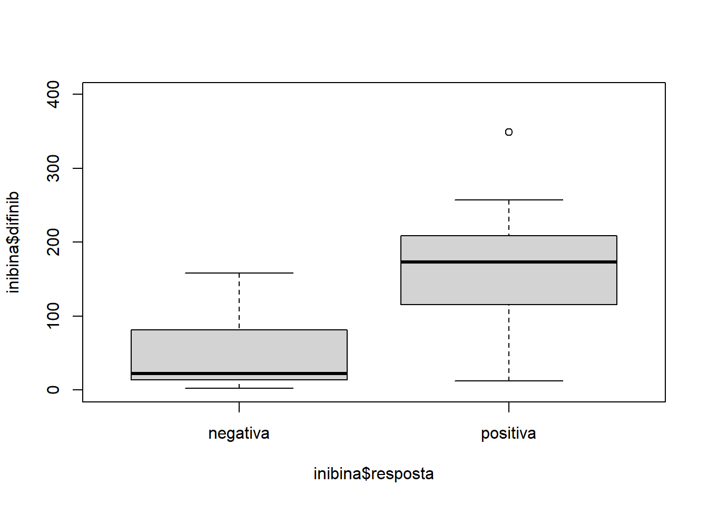
print(inibina, n = 32)## # A tibble: 32 × 5
## ident resposta inibpre inibpos difinib
## <dbl> <fct> <dbl> <dbl> <dbl>
## 1 1 positiva 54.0 65.9 11.9
## 2 2 positiva 159. 281. 122.
## 3 3 positiva 98.3 305. 207.
## 4 4 positiva 85.3 434. 349.
## 5 5 positiva 128. 229. 101.
## 6 6 positiva 144. 354. 210.
## 7 7 positiva 111. 254. 143.
## 8 8 positiva 47.5 199. 152.
## 9 9 positiva 123. 328. 205.
## 10 10 positiva 166. 339. 174.
## 11 11 positiva 145. 377. 232.
## 12 12 positiva 186. 1055. 869.
## 13 13 positiva 149. 354. 204.
## 14 14 positiva 33.3 100. 66.8
## 15 15 positiva 182. 358. 177.
## 16 16 positiva 58.4 168. 110.
## 17 17 positiva 128. 228. 100.
## 18 18 positiva 153. 312. 159.
## 19 19 positiva 149. 406. 257.
## 20 20 negativa 81 201. 120.
## 21 21 negativa 24.7 45.2 20.4
## 22 22 negativa 3.02 6.03 3.01
## 23 23 negativa 4.27 17.8 13.5
## 24 24 negativa 99.3 128. 28.6
## 25 25 negativa 108. 129. 21.1
## 26 26 negativa 7.36 21.3 13.9
## 27 27 negativa 161. 320. 158.
## 28 28 negativa 184. 311. 127.
## 29 29 negativa 23.1 45.6 22.5
## 30 30 negativa 111. 192. 81.0
## 31 31 negativa 106. 131. 24.8
## 32 32 negativa 3.98 6.46 2.48# Hmisc::describe(inibina)
summary(inibina)## ident resposta inibpre inibpos difinib
## Min. : 1.00 negativa:13 Min. : 3.02 Min. : 6.03 Min. : 2.48
## 1st Qu.: 8.75 positiva:19 1st Qu.: 52.40 1st Qu.: 120.97 1st Qu.: 24.22
## Median :16.50 Median :109.44 Median : 228.89 Median :121.18
## Mean :16.50 Mean :100.53 Mean : 240.80 Mean :140.27
## 3rd Qu.:24.25 3rd Qu.:148.93 3rd Qu.: 330.77 3rd Qu.:183.77
## Max. :32.00 Max. :186.38 Max. :1055.19 Max. :868.81sd(inibina$difinib)## [1] 159.2217Criando um dataframe para comparar as métricas dos modelos.
model_eval <- data.frame(matrix(ncol = 5, nrow = 0))
colnames(model_eval) <- c('Model', 'Algorithm', 'Accuracy', 'Sensitivity', 'Specificity')3.2.3 Generalized Linear Models
modLogist01 = glm(resposta ~ difinib, family = binomial, data = inibina)
summary(modLogist01)##
## Call:
## glm(formula = resposta ~ difinib, family = binomial, data = inibina)
##
## Deviance Residuals:
## Min 1Q Median 3Q Max
## -1.9770 -0.5594 0.1890 0.5589 2.0631
##
## Coefficients:
## Estimate Std. Error z value Pr(>|z|)
## (Intercept) -2.310455 0.947438 -2.439 0.01474 *
## difinib 0.025965 0.008561 3.033 0.00242 **
## ---
## Signif. codes: 0 '***' 0.001 '**' 0.01 '*' 0.05 '.' 0.1 ' ' 1
##
## (Dispersion parameter for binomial family taken to be 1)
##
## Null deviance: 43.230 on 31 degrees of freedom
## Residual deviance: 24.758 on 30 degrees of freedom
## AIC: 28.758
##
## Number of Fisher Scoring iterations: 6predito = predict.glm(modLogist01, type = "response")
classPred = ifelse(predito>0.5, "positiva", "negativa")
classPred = as.factor(classPred)
cm = confusionMatrix(classPred, inibina$resposta, positive = "positiva")
cm## Confusion Matrix and Statistics
##
## Reference
## Prediction negativa positiva
## negativa 10 2
## positiva 3 17
##
## Accuracy : 0.8438
## 95% CI : (0.6721, 0.9472)
## No Information Rate : 0.5938
## P-Value [Acc > NIR] : 0.002273
##
## Kappa : 0.6721
##
## Mcnemar's Test P-Value : 1.000000
##
## Sensitivity : 0.8947
## Specificity : 0.7692
## Pos Pred Value : 0.8500
## Neg Pred Value : 0.8333
## Prevalence : 0.5938
## Detection Rate : 0.5312
## Detection Prevalence : 0.6250
## Balanced Accuracy : 0.8320
##
## 'Positive' Class : positiva
## # Adiciona as métricas no df
model_eval[nrow(model_eval) + 1,] <- c("modLogist01", "glm", cm$overall['Accuracy'], cm$byClass['Sensitivity'], cm$byClass['Specificity'])Validação cruzada leave-one-out
trControl <- trainControl(method = "LOOCV")
modLogist02 <- train(resposta ~ difinib, method = "glm", data = inibina, family = binomial,
trControl = trControl, metric = "Accuracy")
summary(modLogist02)##
## Call:
## NULL
##
## Deviance Residuals:
## Min 1Q Median 3Q Max
## -1.9770 -0.5594 0.1890 0.5589 2.0631
##
## Coefficients:
## Estimate Std. Error z value Pr(>|z|)
## (Intercept) -2.310455 0.947438 -2.439 0.01474 *
## difinib 0.025965 0.008561 3.033 0.00242 **
## ---
## Signif. codes: 0 '***' 0.001 '**' 0.01 '*' 0.05 '.' 0.1 ' ' 1
##
## (Dispersion parameter for binomial family taken to be 1)
##
## Null deviance: 43.230 on 31 degrees of freedom
## Residual deviance: 24.758 on 30 degrees of freedom
## AIC: 28.758
##
## Number of Fisher Scoring iterations: 6predito = predict(modLogist02, newdata = inibina)
classPred = as.factor(predito)
cm = confusionMatrix(classPred, inibina$resposta, positive = "positiva")
cm## Confusion Matrix and Statistics
##
## Reference
## Prediction negativa positiva
## negativa 10 2
## positiva 3 17
##
## Accuracy : 0.8438
## 95% CI : (0.6721, 0.9472)
## No Information Rate : 0.5938
## P-Value [Acc > NIR] : 0.002273
##
## Kappa : 0.6721
##
## Mcnemar's Test P-Value : 1.000000
##
## Sensitivity : 0.8947
## Specificity : 0.7692
## Pos Pred Value : 0.8500
## Neg Pred Value : 0.8333
## Prevalence : 0.5938
## Detection Rate : 0.5312
## Detection Prevalence : 0.6250
## Balanced Accuracy : 0.8320
##
## 'Positive' Class : positiva
## # Adiciona as métricas no df
model_eval[nrow(model_eval) + 1,] <- c("modLogist02-LOOCV", "glm", cm$overall['Accuracy'], cm$byClass['Sensitivity'], cm$byClass['Specificity'])Treinar o modelo com o método LOOCV, neste conjunto de dados, não mudou o resultado.
3.2.4 Linear Discriminant Analysis - Fisher
modFisher01 = lda(resposta ~ difinib, data = inibina, prior = c(0.5, 0.5))
predito = predict(modFisher01)
classPred = predito$class
cm = confusionMatrix(classPred, inibina$resposta, positive = "positiva")
cm## Confusion Matrix and Statistics
##
## Reference
## Prediction negativa positiva
## negativa 11 6
## positiva 2 13
##
## Accuracy : 0.75
## 95% CI : (0.566, 0.8854)
## No Information Rate : 0.5938
## P-Value [Acc > NIR] : 0.04978
##
## Kappa : 0.5058
##
## Mcnemar's Test P-Value : 0.28884
##
## Sensitivity : 0.6842
## Specificity : 0.8462
## Pos Pred Value : 0.8667
## Neg Pred Value : 0.6471
## Prevalence : 0.5938
## Detection Rate : 0.4062
## Detection Prevalence : 0.4688
## Balanced Accuracy : 0.7652
##
## 'Positive' Class : positiva
## # Adiciona as métricas no df
model_eval[nrow(model_eval) + 1,] <- c("modFisher01-prior 0.5 / 0.5", "lda", cm$overall['Accuracy'], cm$byClass['Sensitivity'], cm$byClass['Specificity'])3.2.5 Bayes
inibina$resposta## [1] positiva positiva positiva positiva positiva positiva positiva positiva positiva
## [10] positiva positiva positiva positiva positiva positiva positiva positiva positiva
## [19] positiva negativa negativa negativa negativa negativa negativa negativa negativa
## [28] negativa negativa negativa negativa negativa
## Levels: negativa positivamodBayes01 = lda(resposta ~ difinib, data = inibina, prior = c(0.65, 0.35))
predito = predict(modBayes01)
classPred = predito$class
cm = confusionMatrix(classPred, inibina$resposta, positive = "positiva")
cm## Confusion Matrix and Statistics
##
## Reference
## Prediction negativa positiva
## negativa 13 13
## positiva 0 6
##
## Accuracy : 0.5938
## 95% CI : (0.4064, 0.763)
## No Information Rate : 0.5938
## P-Value [Acc > NIR] : 0.5755484
##
## Kappa : 0.2727
##
## Mcnemar's Test P-Value : 0.0008741
##
## Sensitivity : 0.3158
## Specificity : 1.0000
## Pos Pred Value : 1.0000
## Neg Pred Value : 0.5000
## Prevalence : 0.5938
## Detection Rate : 0.1875
## Detection Prevalence : 0.1875
## Balanced Accuracy : 0.6579
##
## 'Positive' Class : positiva
## # Adiciona as métricas no df
model_eval[nrow(model_eval) + 1,] <- c("modBayes01-prior 0.65 / 0.35", "lda", cm$overall['Accuracy'], cm$byClass['Sensitivity'], cm$byClass['Specificity'])table(classPred)## classPred
## negativa positiva
## 26 6print(inibina, n = 32)## # A tibble: 32 × 5
## ident resposta inibpre inibpos difinib
## <dbl> <fct> <dbl> <dbl> <dbl>
## 1 1 positiva 54.0 65.9 11.9
## 2 2 positiva 159. 281. 122.
## 3 3 positiva 98.3 305. 207.
## 4 4 positiva 85.3 434. 349.
## 5 5 positiva 128. 229. 101.
## 6 6 positiva 144. 354. 210.
## 7 7 positiva 111. 254. 143.
## 8 8 positiva 47.5 199. 152.
## 9 9 positiva 123. 328. 205.
## 10 10 positiva 166. 339. 174.
## 11 11 positiva 145. 377. 232.
## 12 12 positiva 186. 1055. 869.
## 13 13 positiva 149. 354. 204.
## 14 14 positiva 33.3 100. 66.8
## 15 15 positiva 182. 358. 177.
## 16 16 positiva 58.4 168. 110.
## 17 17 positiva 128. 228. 100.
## 18 18 positiva 153. 312. 159.
## 19 19 positiva 149. 406. 257.
## 20 20 negativa 81 201. 120.
## 21 21 negativa 24.7 45.2 20.4
## 22 22 negativa 3.02 6.03 3.01
## 23 23 negativa 4.27 17.8 13.5
## 24 24 negativa 99.3 128. 28.6
## 25 25 negativa 108. 129. 21.1
## 26 26 negativa 7.36 21.3 13.9
## 27 27 negativa 161. 320. 158.
## 28 28 negativa 184. 311. 127.
## 29 29 negativa 23.1 45.6 22.5
## 30 30 negativa 111. 192. 81.0
## 31 31 negativa 106. 131. 24.8
## 32 32 negativa 3.98 6.46 2.48Naive Bayes
modNaiveBayes01 = naiveBayes(resposta ~ difinib, data = inibina)
predito = predict(modNaiveBayes01, inibina)
cm = confusionMatrix(predito, inibina$resposta, positive = "positiva")
cm## Confusion Matrix and Statistics
##
## Reference
## Prediction negativa positiva
## negativa 11 5
## positiva 2 14
##
## Accuracy : 0.7812
## 95% CI : (0.6003, 0.9072)
## No Information Rate : 0.5938
## P-Value [Acc > NIR] : 0.02102
##
## Kappa : 0.5625
##
## Mcnemar's Test P-Value : 0.44969
##
## Sensitivity : 0.7368
## Specificity : 0.8462
## Pos Pred Value : 0.8750
## Neg Pred Value : 0.6875
## Prevalence : 0.5938
## Detection Rate : 0.4375
## Detection Prevalence : 0.5000
## Balanced Accuracy : 0.7915
##
## 'Positive' Class : positiva
## # Adiciona as métricas no df
model_eval[nrow(model_eval) + 1,] <- c("modNaiveBayes01", "naiveBayes", cm$overall['Accuracy'], cm$byClass['Sensitivity'], cm$byClass['Specificity'])3.2.6 Decison tree
modArvDec01 = rpart(resposta ~ difinib, data = inibina)
prp(modArvDec01, faclen=0, #use full names for factor labels
extra=1, #display number of observations for each terminal node
roundint=F, #don't round to integers in output
digits=5)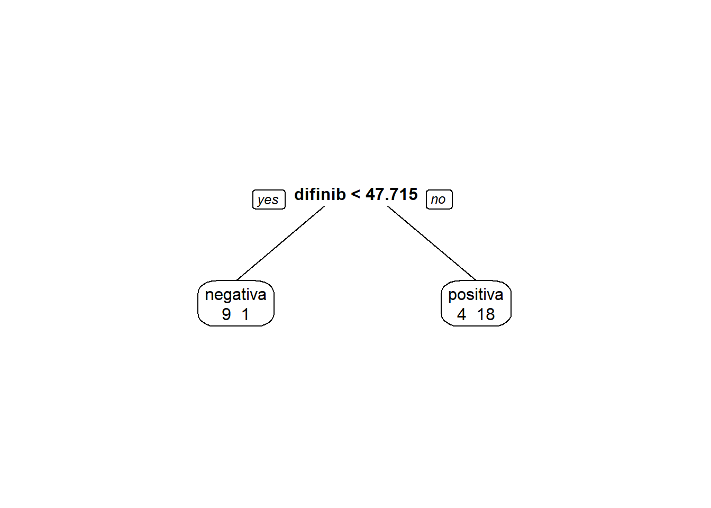
predito = predict(modArvDec01, type = "class")
cm = confusionMatrix(predito, inibina$resposta, positive = "positiva")
cm## Confusion Matrix and Statistics
##
## Reference
## Prediction negativa positiva
## negativa 9 1
## positiva 4 18
##
## Accuracy : 0.8438
## 95% CI : (0.6721, 0.9472)
## No Information Rate : 0.5938
## P-Value [Acc > NIR] : 0.002273
##
## Kappa : 0.6639
##
## Mcnemar's Test P-Value : 0.371093
##
## Sensitivity : 0.9474
## Specificity : 0.6923
## Pos Pred Value : 0.8182
## Neg Pred Value : 0.9000
## Prevalence : 0.5938
## Detection Rate : 0.5625
## Detection Prevalence : 0.6875
## Balanced Accuracy : 0.8198
##
## 'Positive' Class : positiva
## # Adiciona as métricas no df
model_eval[nrow(model_eval) + 1,] <- c("modArvDec01", "rpart", cm$overall['Accuracy'], cm$byClass['Sensitivity'], cm$byClass['Specificity'])x = 1:32
plot(inibina$difinib ~x, col = inibina$resposta)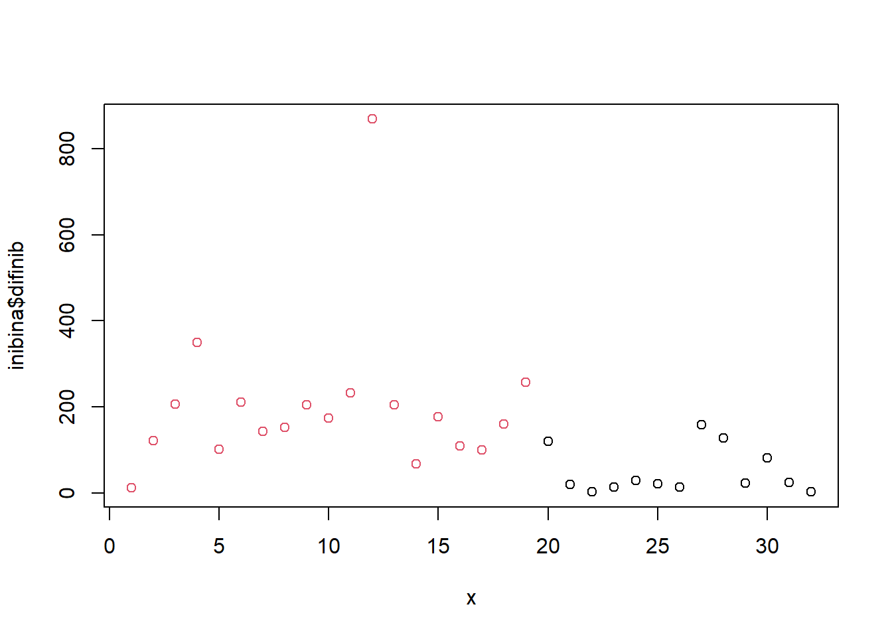
3.2.7 SVM
modSVM01 = svm(resposta ~ difinib, data = inibina, kernel = "linear")
predito = predict(modSVM01, type = "class")
cm = confusionMatrix(predito, inibina$resposta, positive = "positiva")
# Adiciona as métricas no df
model_eval[nrow(model_eval) + 1,] <- c("modSVM01", "svm", cm$overall['Accuracy'], cm$byClass['Sensitivity'], cm$byClass['Specificity'])3.2.8 neuralnet
modRedNeural01 = neuralnet(resposta ~ difinib, data = inibina, hidden = c(2,4,3))
plot(modRedNeural01)
ypred = neuralnet::compute(modRedNeural01, inibina)
yhat = ypred$net.result
round(yhat)## [,1] [,2]
## [1,] 1 0
## [2,] 1 0
## [3,] 0 1
## [4,] 0 1
## [5,] 0 1
## [6,] 0 1
## [7,] 0 1
## [8,] 0 1
## [9,] 0 1
## [10,] 0 1
## [11,] 0 1
## [12,] 0 1
## [13,] 0 1
## [14,] 1 0
## [15,] 0 1
## [16,] 0 1
## [17,] 0 1
## [18,] 0 1
## [19,] 0 1
## [20,] 1 0
## [21,] 1 0
## [22,] 1 0
## [23,] 1 0
## [24,] 1 0
## [25,] 1 0
## [26,] 1 0
## [27,] 0 1
## [28,] 1 0
## [29,] 1 0
## [30,] 1 0
## [31,] 1 0
## [32,] 1 0yhat=data.frame("yhat"=ifelse(max.col(yhat[ ,1:2])==1, "negativa", "positiva"))
cm = confusionMatrix(inibina$resposta, as.factor(yhat$yhat))
cm## Confusion Matrix and Statistics
##
## Reference
## Prediction negativa positiva
## negativa 12 1
## positiva 3 16
##
## Accuracy : 0.875
## 95% CI : (0.7101, 0.9649)
## No Information Rate : 0.5312
## P-Value [Acc > NIR] : 4.151e-05
##
## Kappa : 0.747
##
## Mcnemar's Test P-Value : 0.6171
##
## Sensitivity : 0.8000
## Specificity : 0.9412
## Pos Pred Value : 0.9231
## Neg Pred Value : 0.8421
## Prevalence : 0.4688
## Detection Rate : 0.3750
## Detection Prevalence : 0.4062
## Balanced Accuracy : 0.8706
##
## 'Positive' Class : negativa
## # Adiciona as métricas no df
model_eval[nrow(model_eval) + 1,] <- c("modRedNeural01", "neuralnet", cm$overall['Accuracy'], cm$byClass['Sensitivity'], cm$byClass['Specificity'])3.2.9 KNN
modKnn1_01 = knn3(resposta ~ difinib, data = inibina, k = 1)
predito = predict(modKnn1_01, inibina, type = "class")
cm = confusionMatrix(predito, inibina$resposta, positive = "positiva")
cm## Confusion Matrix and Statistics
##
## Reference
## Prediction negativa positiva
## negativa 13 0
## positiva 0 19
##
## Accuracy : 1
## 95% CI : (0.8911, 1)
## No Information Rate : 0.5938
## P-Value [Acc > NIR] : 5.693e-08
##
## Kappa : 1
##
## Mcnemar's Test P-Value : NA
##
## Sensitivity : 1.0000
## Specificity : 1.0000
## Pos Pred Value : 1.0000
## Neg Pred Value : 1.0000
## Prevalence : 0.5938
## Detection Rate : 0.5938
## Detection Prevalence : 0.5938
## Balanced Accuracy : 1.0000
##
## 'Positive' Class : positiva
## # Adiciona as métricas no df
model_eval[nrow(model_eval) + 1,] <- c("modKnn1_01-k=1", "knn3", cm$overall['Accuracy'], cm$byClass['Sensitivity'], cm$byClass['Specificity'])k = 3
modKnn3_01 = knn3(resposta ~ difinib, data = inibina, k = 3)
predito = predict(modKnn3_01, inibina, type = "class")
cm = confusionMatrix(predito, inibina$resposta, positive = "positiva")
# Adiciona as métricas no df
model_eval[nrow(model_eval) + 1,] <- c("modKnn3_01-k=3", "knn3", cm$overall['Accuracy'], cm$byClass['Sensitivity'], cm$byClass['Specificity'])k = 5
modKnn5_01 = knn3(resposta ~ difinib, data = inibina, k = 5)
predito = predict(modKnn5_01, inibina, type = "class")
cm = confusionMatrix(predito, inibina$resposta, positive = "positiva")
cm## Confusion Matrix and Statistics
##
## Reference
## Prediction negativa positiva
## negativa 9 1
## positiva 4 18
##
## Accuracy : 0.8438
## 95% CI : (0.6721, 0.9472)
## No Information Rate : 0.5938
## P-Value [Acc > NIR] : 0.002273
##
## Kappa : 0.6639
##
## Mcnemar's Test P-Value : 0.371093
##
## Sensitivity : 0.9474
## Specificity : 0.6923
## Pos Pred Value : 0.8182
## Neg Pred Value : 0.9000
## Prevalence : 0.5938
## Detection Rate : 0.5625
## Detection Prevalence : 0.6875
## Balanced Accuracy : 0.8198
##
## 'Positive' Class : positiva
## # Adiciona as métricas no df
model_eval[nrow(model_eval) + 1,] <- c("modKnn5_01-k=5", "knn3", cm$overall['Accuracy'], cm$byClass['Sensitivity'], cm$byClass['Specificity'])3.2.10 Avaliando os modelos
| Model | Algorithm | Accuracy | Sensitivity | Specificity |
|---|---|---|---|---|
| modLogist01 | glm | 0.84375 | 0.894736842105263 | 0.769230769230769 |
| modLogist02-LOOCV | glm | 0.84375 | 0.894736842105263 | 0.769230769230769 |
| modFisher01-prior 0.5 / 0.5 | lda | 0.75 | 0.684210526315789 | 0.846153846153846 |
| modBayes01-prior 0.65 / 0.35 | lda | 0.59375 | 0.315789473684211 | 1 |
| modNaiveBayes01 | naiveBayes | 0.78125 | 0.736842105263158 | 0.846153846153846 |
| modArvDec01 | rpart | 0.84375 | 0.947368421052632 | 0.692307692307692 |
| modSVM01 | svm | 0.84375 | 0.894736842105263 | 0.769230769230769 |
| modRedNeural01 | neuralnet | 0.875 | 0.8 | 0.941176470588235 |
| modKnn1_01-k=1 | knn3 | 1 | 1 | 1 |
| modKnn3_01-k=3 | knn3 | 0.875 | 0.894736842105263 | 0.846153846153846 |
| modKnn5_01-k=5 | knn3 | 0.84375 | 0.947368421052632 | 0.692307692307692 |
Os modelos modLogist01, modFisher01 com \(prior = 0.5, 0.5\), modArvDec01 e modKnn3_01 com \(k=3\) tiveram performance muito parecidas no conjunto de dados. Uma possível escolha seria o modKnn3_01 que combinado obteve melhor acurácia, sensibilidade e especificidade.
3.2.11 Agrupamento
inibinaS = inibina[, 3:5]
d <- dist(inibinaS, method = "maximum")
grup = hclust(d, method = "ward.D")
plot(grup, cex = 0.6)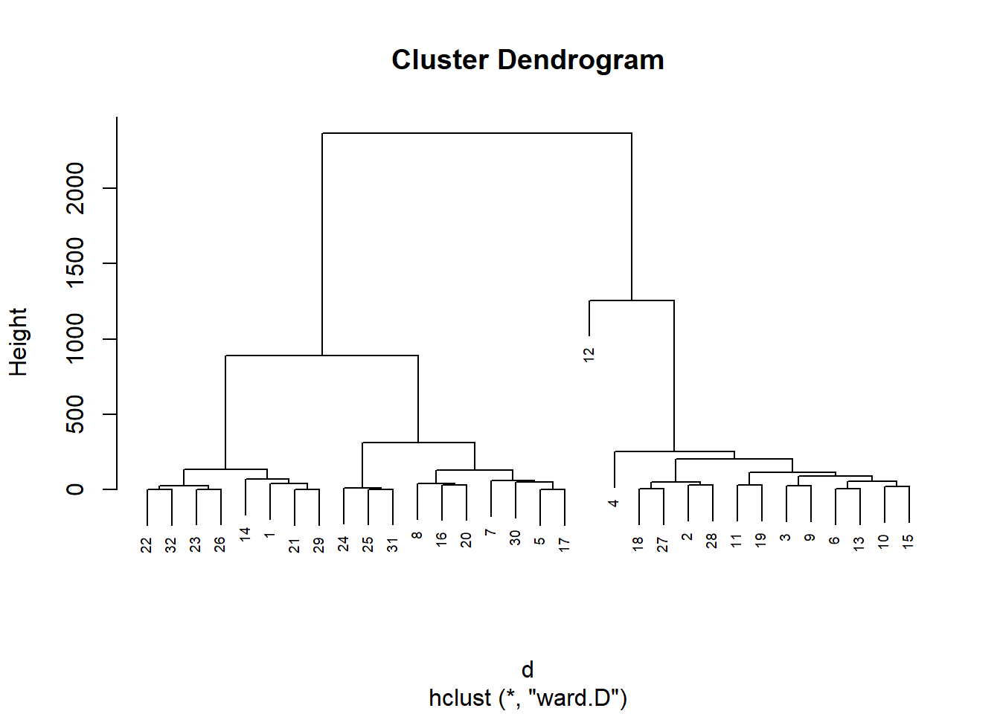
groups <- cutree(grup, k=3)table(groups, inibina$resposta)##
## groups negativa positiva
## 1 11 7
## 2 2 11
## 3 0 1km1 = kmeans(inibinaS, 4)
p1 = fviz_cluster(km1, data=inibinaS,
palette = c("#2E9FDF", "#FC4E07", "#E7B800", "#E7B700"),
star.plot=FALSE,
# repel=TRUE,
ggtheme=theme_bw())
p1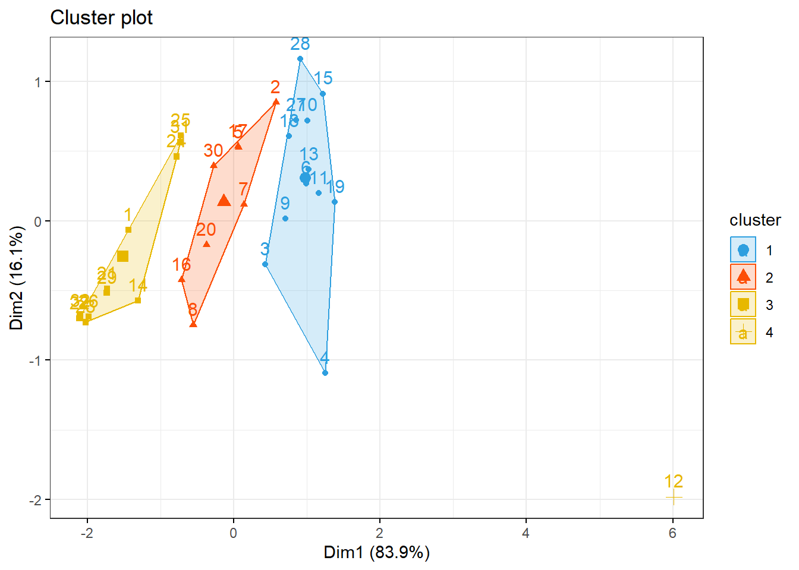
groups = km1$cluster
table(groups, inibina$resposta)##
## groups negativa positiva
## 1 2 10
## 2 2 6
## 3 9 2
## 4 0 13.3 Ultrassom para medir deslocamento do disco
Os dados disponíveis aqui foram extraídos de um estudo realizado no Hospital Universitário da Universidade de São Paulo com o objetivo de avaliar se algumas medidas obtidas ultrassonograficamente poderiam ser utilizadas como substitutas de medidas obtidas por métodos de ressonância magnética, considerada como padrão ouro para avaliação do deslocamento do disco da articulação temporomandibular (referido simplesmente como disco).
3.3.1 Pacotes
Pacotes necessários para estes exercícios:
library(readxl)
library(tidyverse)
library(readxl)
library(ggthemes)
library(plotly)
library(knitr)
library(kableExtra)
library(rpart)
library(rpart.plot)
library(caret)
library(MASS)
library(httr)
library(readxl)
library(tibble)
library(e1071)
library(neuralnet)
library(factoextra)
library(ggpubr)3.3.2 Conjunto de dados
#GET("http://www.ime.usp.br/~jmsinger/MorettinSinger/disco.xls", write_disk(tf <- tempfile(fileext = ".xls")))
httr::GET("http://www.ime.usp.br/~jmsinger/MorettinSinger/disco.xls", httr::write_disk("../dados/disco.xls", overwrite = TRUE))## Response [https://www.ime.usp.br/~jmsinger/MorettinSinger/disco.xls]
## Date: 2022-11-15 23:40
## Status: 200
## Content-Type: application/vnd.ms-excel
## Size: 11.3 kB
## <ON DISK> G:\onedrive\obsidian\adsantos\Mestrado\BD\trabalhos\caderno-bd\dados\disco.xlsdisco <- read_excel("../dados/disco.xls")
str(disco)## tibble [104 × 3] (S3: tbl_df/tbl/data.frame)
## $ deslocamento: num [1:104] 0 0 0 1 0 1 0 0 0 0 ...
## $ distanciaA : num [1:104] 2.2 2.4 2.6 3.5 1.3 2.8 1.5 2.6 1.2 1.7 ...
## $ distanciaF : num [1:104] 1.4 1.2 2 1.8 1 1.1 1.2 1.1 0.6 1.5 ...Número de observações 104.
3.3.2.1 Categorizando a variável de deslocamento.
disco$sumdistancia = disco$distanciaA + disco$distanciaF
disco$deslocamento = as.factor(disco$deslocamento)plot(disco$sumdistancia ~ disco$deslocamento)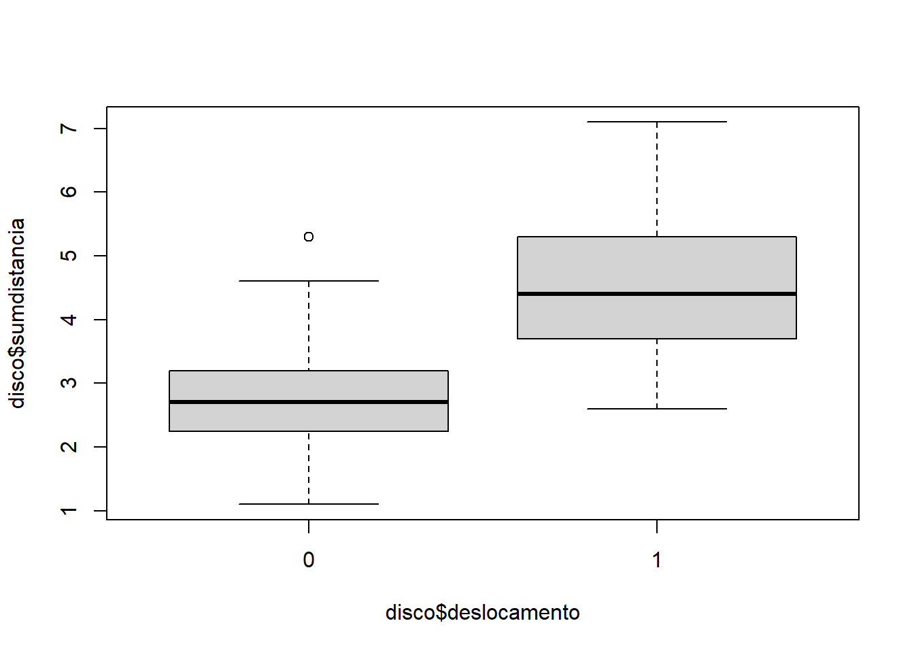
print(disco, n = 32)## # A tibble: 104 × 4
## deslocamento distanciaA distanciaF sumdistancia
## <fct> <dbl> <dbl> <dbl>
## 1 0 2.2 1.4 3.6
## 2 0 2.4 1.2 3.6
## 3 0 2.6 2 4.6
## 4 1 3.5 1.8 5.3
## 5 0 1.3 1 2.3
## 6 1 2.8 1.1 3.9
## 7 0 1.5 1.2 2.7
## 8 0 2.6 1.1 3.7
## 9 0 1.2 0.6 1.8
## 10 0 1.7 1.5 3.2
## 11 0 1.3 1.2 2.5
## 12 0 1.2 1 2.2
## 13 1 4 2.5 6.5
## 14 0 1.2 1 2.2
## 15 1 3.1 1.7 4.8
## 16 1 2.6 0.6 3.2
## 17 0 1.8 0.8 2.6
## 18 0 1.2 1 2.2
## 19 0 1.9 1 2.9
## 20 0 1.2 0.9 2.1
## 21 1 1.7 0.9 2.6
## 22 0 1.2 0.8 2
## 23 1 3.9 3.2 7.1
## 24 0 1.7 1.1 2.8
## 25 0 1.4 1 2.4
## 26 0 1.6 1.3 2.9
## 27 0 1.3 0.5 1.8
## 28 0 1.7 0.7 2.4
## 29 1 2.6 1.8 4.4
## 30 0 1.5 1.5 3
## 31 0 1.8 1.4 3.2
## 32 0 1.2 0.9 2.1
## # … with 72 more rowssummary(disco)## deslocamento distanciaA distanciaF sumdistancia
## 0:75 Min. :0.500 Min. :0.400 Min. :1.100
## 1:29 1st Qu.:1.400 1st Qu.:1.000 1st Qu.:2.500
## Median :1.700 Median :1.200 Median :2.900
## Mean :1.907 Mean :1.362 Mean :3.268
## 3rd Qu.:2.300 3rd Qu.:1.600 3rd Qu.:3.700
## Max. :4.900 Max. :3.300 Max. :7.100sd(disco$sumdistancia)## [1] 1.183976Criando um dataframe para comparar as métricas dos modelos.
model_eval <- data.frame(matrix(ncol = 5, nrow = 0))
colnames(model_eval) <- c('Model', 'Algorithm', 'Accuracy', 'Sensitivity', 'Specificity')3.3.3 Generalized Linear Models
modLogist01 = glm(deslocamento ~ sumdistancia, family = binomial, data = disco)
summary(modLogist01)##
## Call:
## glm(formula = deslocamento ~ sumdistancia, family = binomial,
## data = disco)
##
## Deviance Residuals:
## Min 1Q Median 3Q Max
## -2.2291 -0.4957 -0.3182 0.1560 2.3070
##
## Coefficients:
## Estimate Std. Error z value Pr(>|z|)
## (Intercept) -7.3902 1.3740 -5.379 7.51e-08 ***
## sumdistancia 1.8467 0.3799 4.861 1.17e-06 ***
## ---
## Signif. codes: 0 '***' 0.001 '**' 0.01 '*' 0.05 '.' 0.1 ' ' 1
##
## (Dispersion parameter for binomial family taken to be 1)
##
## Null deviance: 123.107 on 103 degrees of freedom
## Residual deviance: 72.567 on 102 degrees of freedom
## AIC: 76.567
##
## Number of Fisher Scoring iterations: 5predito = predict.glm(modLogist01, type = "response")
classPred = ifelse(predito>0.5, "0", "1")
classPred = as.factor(classPred)
cm = confusionMatrix(classPred, disco$deslocamento, positive = "0")
cm## Confusion Matrix and Statistics
##
## Reference
## Prediction 0 1
## 0 5 16
## 1 70 13
##
## Accuracy : 0.1731
## 95% CI : (0.1059, 0.2597)
## No Information Rate : 0.7212
## P-Value [Acc > NIR] : 1
##
## Kappa : -0.3088
##
## Mcnemar's Test P-Value : 1.096e-08
##
## Sensitivity : 0.06667
## Specificity : 0.44828
## Pos Pred Value : 0.23810
## Neg Pred Value : 0.15663
## Prevalence : 0.72115
## Detection Rate : 0.04808
## Detection Prevalence : 0.20192
## Balanced Accuracy : 0.25747
##
## 'Positive' Class : 0
## # Adiciona as métricas no df
model_eval[nrow(model_eval) + 1,] <- c("modLogist01", "glm", cm$overall['Accuracy'], cm$byClass['Sensitivity'], cm$byClass['Specificity'])Validação cruzada leave-one-out
trControl <- trainControl(method = "LOOCV")
modLogist02 <- train(deslocamento ~ sumdistancia, method = "glm", data = disco, family = binomial,
trControl = trControl, metric = "Accuracy")
summary(modLogist02)##
## Call:
## NULL
##
## Deviance Residuals:
## Min 1Q Median 3Q Max
## -2.2291 -0.4957 -0.3182 0.1560 2.3070
##
## Coefficients:
## Estimate Std. Error z value Pr(>|z|)
## (Intercept) -7.3902 1.3740 -5.379 7.51e-08 ***
## sumdistancia 1.8467 0.3799 4.861 1.17e-06 ***
## ---
## Signif. codes: 0 '***' 0.001 '**' 0.01 '*' 0.05 '.' 0.1 ' ' 1
##
## (Dispersion parameter for binomial family taken to be 1)
##
## Null deviance: 123.107 on 103 degrees of freedom
## Residual deviance: 72.567 on 102 degrees of freedom
## AIC: 76.567
##
## Number of Fisher Scoring iterations: 5predito = predict(modLogist02, newdata = disco)
classPred = as.factor(predito)
cm = confusionMatrix(classPred, disco$deslocamento, positive = "0")
cm## Confusion Matrix and Statistics
##
## Reference
## Prediction 0 1
## 0 70 13
## 1 5 16
##
## Accuracy : 0.8269
## 95% CI : (0.7403, 0.8941)
## No Information Rate : 0.7212
## P-Value [Acc > NIR] : 0.00857
##
## Kappa : 0.5299
##
## Mcnemar's Test P-Value : 0.09896
##
## Sensitivity : 0.9333
## Specificity : 0.5517
## Pos Pred Value : 0.8434
## Neg Pred Value : 0.7619
## Prevalence : 0.7212
## Detection Rate : 0.6731
## Detection Prevalence : 0.7981
## Balanced Accuracy : 0.7425
##
## 'Positive' Class : 0
## # Adiciona as métricas no df
model_eval[nrow(model_eval) + 1,] <- c("modLogist02-LOOCV", "glm", cm$overall['Accuracy'], cm$byClass['Sensitivity'], cm$byClass['Specificity'])kable(model_eval) %>%
kable_styling(latex_options = "striped")| Model | Algorithm | Accuracy | Sensitivity | Specificity |
|---|---|---|---|---|
| modLogist01 | glm | 0.173076923076923 | 0.0666666666666667 | 0.448275862068966 |
| modLogist02-LOOCV | glm | 0.826923076923077 | 0.933333333333333 | 0.551724137931034 |
Treinar o modelo com o método LOOCV melhorou consideravelmente todas as métricas do modelo.
3.3.4 Linear Discriminant Analysis - Fisher
modFisher01 = lda(deslocamento ~ sumdistancia, data = disco, prior = c(0.5, 0.5))
predito = predict(modFisher01)
classPred = predito$class
cm = confusionMatrix(classPred, disco$deslocamento, positive = "0")
cm## Confusion Matrix and Statistics
##
## Reference
## Prediction 0 1
## 0 67 6
## 1 8 23
##
## Accuracy : 0.8654
## 95% CI : (0.7845, 0.9244)
## No Information Rate : 0.7212
## P-Value [Acc > NIR] : 0.0003676
##
## Kappa : 0.6722
##
## Mcnemar's Test P-Value : 0.7892680
##
## Sensitivity : 0.8933
## Specificity : 0.7931
## Pos Pred Value : 0.9178
## Neg Pred Value : 0.7419
## Prevalence : 0.7212
## Detection Rate : 0.6442
## Detection Prevalence : 0.7019
## Balanced Accuracy : 0.8432
##
## 'Positive' Class : 0
## # Adiciona as métricas no df
model_eval[nrow(model_eval) + 1,] <- c("modFisher01-prior 0.5 / 0.5", "lda", cm$overall['Accuracy'], cm$byClass['Sensitivity'], cm$byClass['Specificity'])3.3.5 Bayes
modBayes01 = lda(deslocamento ~ sumdistancia, data = disco, prior = c(0.65, 0.35))
predito = predict(modBayes01)
classPred = predito$class
cm = confusionMatrix(classPred, disco$deslocamento, positive = "0")
cm## Confusion Matrix and Statistics
##
## Reference
## Prediction 0 1
## 0 70 12
## 1 5 17
##
## Accuracy : 0.8365
## 95% CI : (0.7512, 0.9018)
## No Information Rate : 0.7212
## P-Value [Acc > NIR] : 0.004313
##
## Kappa : 0.5611
##
## Mcnemar's Test P-Value : 0.145610
##
## Sensitivity : 0.9333
## Specificity : 0.5862
## Pos Pred Value : 0.8537
## Neg Pred Value : 0.7727
## Prevalence : 0.7212
## Detection Rate : 0.6731
## Detection Prevalence : 0.7885
## Balanced Accuracy : 0.7598
##
## 'Positive' Class : 0
## # Adiciona as métricas no df
model_eval[nrow(model_eval) + 1,] <- c("modBayes01-prior 0.65 / 0.35", "lda", cm$overall['Accuracy'], cm$byClass['Sensitivity'], cm$byClass['Specificity'])table(classPred)## classPred
## 0 1
## 82 22print(disco, n = 32)## # A tibble: 104 × 4
## deslocamento distanciaA distanciaF sumdistancia
## <fct> <dbl> <dbl> <dbl>
## 1 0 2.2 1.4 3.6
## 2 0 2.4 1.2 3.6
## 3 0 2.6 2 4.6
## 4 1 3.5 1.8 5.3
## 5 0 1.3 1 2.3
## 6 1 2.8 1.1 3.9
## 7 0 1.5 1.2 2.7
## 8 0 2.6 1.1 3.7
## 9 0 1.2 0.6 1.8
## 10 0 1.7 1.5 3.2
## 11 0 1.3 1.2 2.5
## 12 0 1.2 1 2.2
## 13 1 4 2.5 6.5
## 14 0 1.2 1 2.2
## 15 1 3.1 1.7 4.8
## 16 1 2.6 0.6 3.2
## 17 0 1.8 0.8 2.6
## 18 0 1.2 1 2.2
## 19 0 1.9 1 2.9
## 20 0 1.2 0.9 2.1
## 21 1 1.7 0.9 2.6
## 22 0 1.2 0.8 2
## 23 1 3.9 3.2 7.1
## 24 0 1.7 1.1 2.8
## 25 0 1.4 1 2.4
## 26 0 1.6 1.3 2.9
## 27 0 1.3 0.5 1.8
## 28 0 1.7 0.7 2.4
## 29 1 2.6 1.8 4.4
## 30 0 1.5 1.5 3
## 31 0 1.8 1.4 3.2
## 32 0 1.2 0.9 2.1
## # … with 72 more rowsNaive Bayes
modNaiveBayes01 = naiveBayes(deslocamento ~ sumdistancia, data = disco)
predito = predict(modNaiveBayes01, disco)
cm = confusionMatrix(predito, disco$deslocamento, positive = "0")
cm## Confusion Matrix and Statistics
##
## Reference
## Prediction 0 1
## 0 70 13
## 1 5 16
##
## Accuracy : 0.8269
## 95% CI : (0.7403, 0.8941)
## No Information Rate : 0.7212
## P-Value [Acc > NIR] : 0.00857
##
## Kappa : 0.5299
##
## Mcnemar's Test P-Value : 0.09896
##
## Sensitivity : 0.9333
## Specificity : 0.5517
## Pos Pred Value : 0.8434
## Neg Pred Value : 0.7619
## Prevalence : 0.7212
## Detection Rate : 0.6731
## Detection Prevalence : 0.7981
## Balanced Accuracy : 0.7425
##
## 'Positive' Class : 0
## # Adiciona as métricas no df
model_eval[nrow(model_eval) + 1,] <- c("modNaiveBayes01", "naiveBayes", cm$overall['Accuracy'], cm$byClass['Sensitivity'], cm$byClass['Specificity'])3.3.6 Decison tree
modArvDec01 = rpart(deslocamento ~ sumdistancia, data = disco)
prp(modArvDec01, faclen=0, #use full names for factor labels
extra=1, #display number of observations for each terminal node
roundint=F, #don't round to integers in output
digits=5)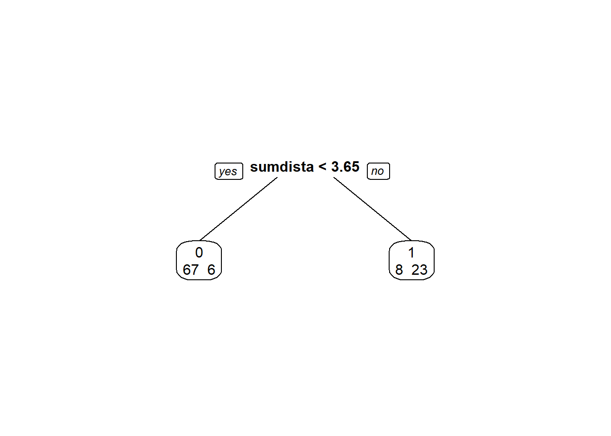
predito = predict(modArvDec01, type = "class")
cm = confusionMatrix(predito, disco$deslocamento, positive = "0")
cm## Confusion Matrix and Statistics
##
## Reference
## Prediction 0 1
## 0 67 6
## 1 8 23
##
## Accuracy : 0.8654
## 95% CI : (0.7845, 0.9244)
## No Information Rate : 0.7212
## P-Value [Acc > NIR] : 0.0003676
##
## Kappa : 0.6722
##
## Mcnemar's Test P-Value : 0.7892680
##
## Sensitivity : 0.8933
## Specificity : 0.7931
## Pos Pred Value : 0.9178
## Neg Pred Value : 0.7419
## Prevalence : 0.7212
## Detection Rate : 0.6442
## Detection Prevalence : 0.7019
## Balanced Accuracy : 0.8432
##
## 'Positive' Class : 0
## # Adiciona as métricas no df
model_eval[nrow(model_eval) + 1,] <- c("modArvDec01", "rpart", cm$overall['Accuracy'], cm$byClass['Sensitivity'], cm$byClass['Specificity'])x = 1:nrow(disco)
plot(disco$sumdistancia ~ x, col = disco$deslocamento)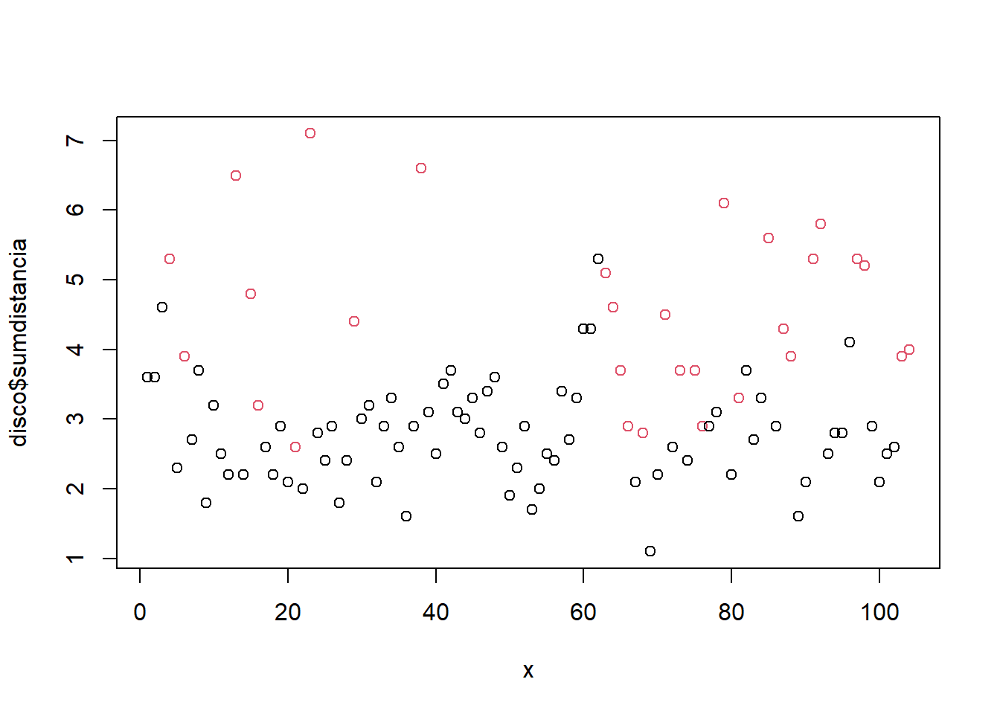
3.3.7 SVM
modSVM01 = svm(deslocamento ~ sumdistancia, data = disco, kernel = "linear")
predito = predict(modSVM01, type = "class")
cm = confusionMatrix(predito, disco$deslocamento, positive = "0")
# Adiciona as métricas no df
model_eval[nrow(model_eval) + 1,] <- c("modSVM01", "svm", cm$overall['Accuracy'], cm$byClass['Sensitivity'], cm$byClass['Specificity'])3.3.8 neuralnet
modRedNeural01 = neuralnet(deslocamento ~ sumdistancia, data = disco, hidden = c(2,4,3))
plot(modRedNeural01)
ypred = neuralnet::compute(modRedNeural01, disco)
yhat = ypred$net.result
round(yhat)## [,1] [,2]
## [1,] 1 0
## [2,] 1 0
## [3,] 0 1
## [4,] 0 1
## [5,] 1 0
## [6,] 1 0
## [7,] 1 0
## [8,] 1 0
## [9,] 1 0
## [10,] 1 0
## [11,] 1 0
## [12,] 1 0
## [13,] 0 1
## [14,] 1 0
## [15,] 0 1
## [16,] 1 0
## [17,] 1 0
## [18,] 1 0
## [19,] 1 0
## [20,] 1 0
## [21,] 1 0
## [22,] 1 0
## [23,] 0 1
## [24,] 1 0
## [25,] 1 0
## [26,] 1 0
## [27,] 1 0
## [28,] 1 0
## [29,] 0 1
## [30,] 1 0
## [31,] 1 0
## [32,] 1 0
## [33,] 1 0
## [34,] 1 0
## [35,] 1 0
## [36,] 1 0
## [37,] 1 0
## [38,] 0 1
## [39,] 1 0
## [40,] 1 0
## [41,] 1 0
## [42,] 1 0
## [43,] 1 0
## [44,] 1 0
## [45,] 1 0
## [46,] 1 0
## [47,] 1 0
## [48,] 1 0
## [49,] 1 0
## [50,] 1 0
## [51,] 1 0
## [52,] 1 0
## [53,] 1 0
## [54,] 1 0
## [55,] 1 0
## [56,] 1 0
## [57,] 1 0
## [58,] 1 0
## [59,] 1 0
## [60,] 0 1
## [61,] 0 1
## [62,] 0 1
## [63,] 0 1
## [64,] 0 1
## [65,] 1 0
## [66,] 1 0
## [67,] 1 0
## [68,] 1 0
## [69,] 1 0
## [70,] 1 0
## [71,] 0 1
## [72,] 1 0
## [73,] 1 0
## [74,] 1 0
## [75,] 1 0
## [76,] 1 0
## [77,] 1 0
## [78,] 1 0
## [79,] 0 1
## [80,] 1 0
## [81,] 1 0
## [82,] 1 0
## [83,] 1 0
## [84,] 1 0
## [85,] 0 1
## [86,] 1 0
## [87,] 0 1
## [88,] 1 0
## [89,] 1 0
## [90,] 1 0
## [91,] 0 1
## [92,] 0 1
## [93,] 1 0
## [94,] 1 0
## [95,] 1 0
## [96,] 0 1
## [97,] 0 1
## [98,] 0 1
## [99,] 1 0
## [100,] 1 0
## [101,] 1 0
## [102,] 1 0
## [103,] 1 0
## [104,] 0 1yhat=data.frame("yhat"=ifelse(max.col(yhat[ ,1:2])==1, "0", "1"))
cm = confusionMatrix(disco$deslocamento, as.factor(yhat$yhat))
cm## Confusion Matrix and Statistics
##
## Reference
## Prediction 0 1
## 0 70 5
## 1 12 17
##
## Accuracy : 0.8365
## 95% CI : (0.7512, 0.9018)
## No Information Rate : 0.7885
## P-Value [Acc > NIR] : 0.1388
##
## Kappa : 0.5611
##
## Mcnemar's Test P-Value : 0.1456
##
## Sensitivity : 0.8537
## Specificity : 0.7727
## Pos Pred Value : 0.9333
## Neg Pred Value : 0.5862
## Prevalence : 0.7885
## Detection Rate : 0.6731
## Detection Prevalence : 0.7212
## Balanced Accuracy : 0.8132
##
## 'Positive' Class : 0
## # Adiciona as métricas no df
model_eval[nrow(model_eval) + 1,] <- c("modRedNeural01", "neuralnet", cm$overall['Accuracy'], cm$byClass['Sensitivity'], cm$byClass['Specificity'])3.3.9 KNN
modKnn1_01 = knn3(deslocamento ~ sumdistancia, data = disco, k = 1)
predito = predict(modKnn1_01, disco, type = "class")
cm = confusionMatrix(predito, disco$deslocamento, positive = "0")
cm## Confusion Matrix and Statistics
##
## Reference
## Prediction 0 1
## 0 72 11
## 1 3 18
##
## Accuracy : 0.8654
## 95% CI : (0.7845, 0.9244)
## No Information Rate : 0.7212
## P-Value [Acc > NIR] : 0.0003676
##
## Kappa : 0.6344
##
## Mcnemar's Test P-Value : 0.0613688
##
## Sensitivity : 0.9600
## Specificity : 0.6207
## Pos Pred Value : 0.8675
## Neg Pred Value : 0.8571
## Prevalence : 0.7212
## Detection Rate : 0.6923
## Detection Prevalence : 0.7981
## Balanced Accuracy : 0.7903
##
## 'Positive' Class : 0
## # Adiciona as métricas no df
model_eval[nrow(model_eval) + 1,] <- c("modKnn1_01-k=1", "knn3", cm$overall['Accuracy'], cm$byClass['Sensitivity'], cm$byClass['Specificity'])k = 3
modKnn3_01 = knn3(deslocamento ~ sumdistancia, data = disco, k = 3)
predito = predict(modKnn3_01, disco, type = "class")
cm = confusionMatrix(predito, disco$deslocamento, positive = "0")
# Adiciona as métricas no df
model_eval[nrow(model_eval) + 1,] <- c("modKnn3_01-k=3", "knn3", cm$overall['Accuracy'], cm$byClass['Sensitivity'], cm$byClass['Specificity'])k = 5
modKnn5_01 = knn3(deslocamento ~ sumdistancia, data = disco, k = 5)
predito = predict(modKnn5_01, disco, type = "class")
cm = confusionMatrix(predito, disco$deslocamento, positive = "0")
cm## Confusion Matrix and Statistics
##
## Reference
## Prediction 0 1
## 0 72 9
## 1 3 20
##
## Accuracy : 0.8846
## 95% CI : (0.8071, 0.9389)
## No Information Rate : 0.7212
## P-Value [Acc > NIR] : 4.877e-05
##
## Kappa : 0.6937
##
## Mcnemar's Test P-Value : 0.1489
##
## Sensitivity : 0.9600
## Specificity : 0.6897
## Pos Pred Value : 0.8889
## Neg Pred Value : 0.8696
## Prevalence : 0.7212
## Detection Rate : 0.6923
## Detection Prevalence : 0.7788
## Balanced Accuracy : 0.8248
##
## 'Positive' Class : 0
## # Adiciona as métricas no df
model_eval[nrow(model_eval) + 1,] <- c("modKnn5_01-k=5", "knn3", cm$overall['Accuracy'], cm$byClass['Sensitivity'], cm$byClass['Specificity'])3.3.10 Avaliando os modelos
| Model | Algorithm | Accuracy | Sensitivity | Specificity |
|---|---|---|---|---|
| modLogist01 | glm | 0.173076923076923 | 0.0666666666666667 | 0.448275862068966 |
| modLogist02-LOOCV | glm | 0.826923076923077 | 0.933333333333333 | 0.551724137931034 |
| modFisher01-prior 0.5 / 0.5 | lda | 0.865384615384615 | 0.893333333333333 | 0.793103448275862 |
| modBayes01-prior 0.65 / 0.35 | lda | 0.836538461538462 | 0.933333333333333 | 0.586206896551724 |
| modNaiveBayes01 | naiveBayes | 0.826923076923077 | 0.933333333333333 | 0.551724137931034 |
| modArvDec01 | rpart | 0.865384615384615 | 0.893333333333333 | 0.793103448275862 |
| modSVM01 | svm | 0.836538461538462 | 0.946666666666667 | 0.551724137931034 |
| modRedNeural01 | neuralnet | 0.836538461538462 | 0.853658536585366 | 0.772727272727273 |
| modKnn1_01-k=1 | knn3 | 0.865384615384615 | 0.96 | 0.620689655172414 |
| modKnn3_01-k=3 | knn3 | 0.865384615384615 | 0.933333333333333 | 0.689655172413793 |
| modKnn5_01-k=5 | knn3 | 0.884615384615385 | 0.96 | 0.689655172413793 |
Todos os modelos tiveram performance semelhante, com destaque para modFisher01 com \(prior 0.5, 0.5\).
3.3.11 Agrupamento
discoS = disco[, 2:3]
d <- dist(discoS, method = "maximum")
grup = hclust(d, method = "ward.D")
plot(grup, cex = 0.6)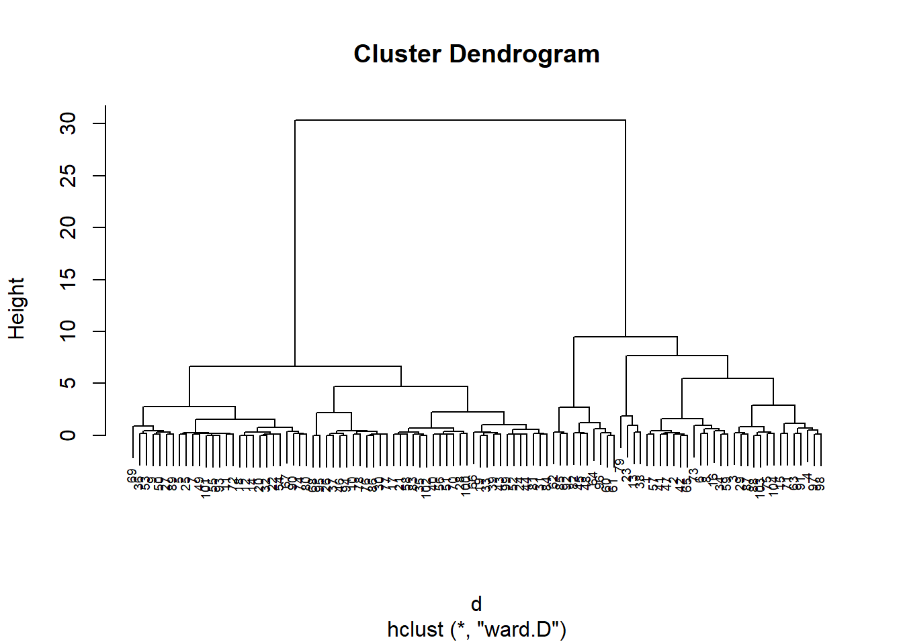
groups <- cutree(grup, k=3)table(groups, disco$deslocamento)##
## groups 0 1
## 1 10 21
## 2 58 5
## 3 7 3km1 = kmeans(discoS, 4)
p1 = fviz_cluster(km1, data=discoS,
palette = c("#2E9FDF", "#FC4E07", "#E7B800", "#E7B700"),
star.plot=FALSE,
# repel=TRUE,
ggtheme=theme_bw())
p1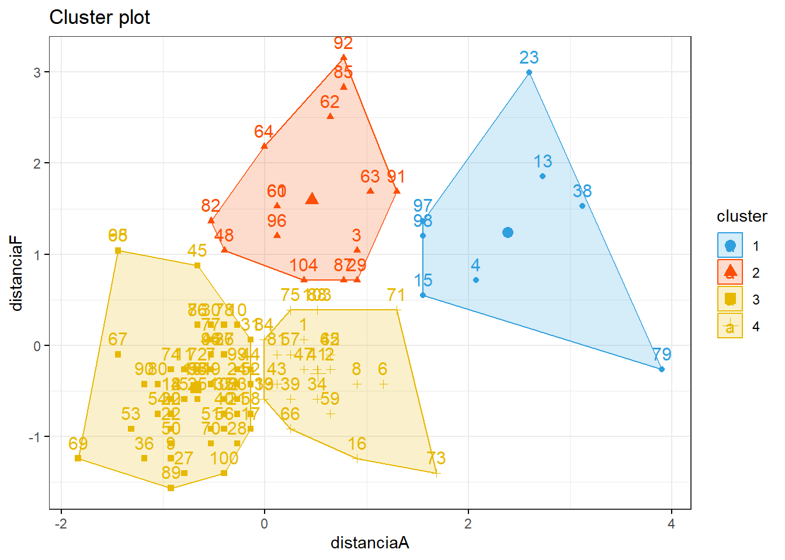
groups = km1$cluster
table(groups, disco$deslocamento)##
## groups 0 1
## 1 0 8
## 2 7 8
## 3 54 3
## 4 14 103.4 Classificação de tipos faciais
Os dados do arquivo tipofacial (disponível aqui) foram extraídos de um estudo odontológico realizado pelo Dr. Flávio Cotrim Vellini. Um dos objetivos era utilizar medidas entre diferentes pontos do crânio para caracterizar indivíduos com diferentes tipos faciais, a saber, braquicéfalos, mesocéfalos e dolicocéfalos (grupos). O conjunto de dados contém observações de 11 variáveis em 101 pacientes. Para efeitos didáticos, considere apenas a altura facial (altfac) e a profundidade facial (proffac) como variáveis preditoras.
3.4.2 Conjunto de dados
httr::GET("http://www.ime.usp.br/~jmsinger/MorettinSinger/tipofacial.xls", httr::write_disk("../dados/tipofacial.xls", overwrite = TRUE))## Response [https://www.ime.usp.br/~jmsinger/MorettinSinger/tipofacial.xls]
## Date: 2022-11-15 23:40
## Status: 200
## Content-Type: application/vnd.ms-excel
## Size: 20.5 kB
## <ON DISK> G:\onedrive\obsidian\adsantos\Mestrado\BD\trabalhos\caderno-bd\dados\tipofacial.xlstipofacial <- read_excel("../dados/tipofacial.xls")
str(tipofacial)## tibble [101 × 13] (S3: tbl_df/tbl/data.frame)
## $ paciente: num [1:101] 10 10 27 39 39 39 55 76 77 133 ...
## $ sexo : chr [1:101] "M" "M" "F" "F" ...
## $ grupo : chr [1:101] "braq" "braq" "braq" "braq" ...
## $ idade : num [1:101] 5.58 11.42 16.17 4.92 10.92 ...
## $ nsba : num [1:101] 132 134 122 130 130 ...
## $ ns : num [1:101] 58 63 77.5 64 70 68.5 71 72 70 80 ...
## $ sba : num [1:101] 36 42.5 48 34.5 36.5 41.5 42 46.5 44 52 ...
## $ altfac : num [1:101] 1.2 1.2 2.6 3.1 3.1 3.3 2.4 1.9 2.1 2.8 ...
## $ proffac : num [1:101] 0.8 0.4 0.2 -1 0.6 -0.6 0.3 0.5 -0.1 0.2 ...
## $ eixofac : num [1:101] 0.4 1 0.3 1.9 1.2 1.1 1.1 1.4 2.2 0.4 ...
## $ planmand: num [1:101] 0.4 1 0.9 1.3 2.2 1.2 1.2 0.6 0.8 1.1 ...
## $ arcomand: num [1:101] 2.5 3.6 3.4 1.6 2.3 2.1 3.5 3.5 0.7 1.8 ...
## $ vert : num [1:101] 1.06 1.44 1.48 1.38 1.88 1.42 1.7 1.58 1.14 1.26 ...Número de observações 101.
3.4.2.1 Categorizando a variável de grupo.
# Considerar (altfac) e a profundidade facial (proffac) como variáveis preditoras.
tipofacial$sumfac = tipofacial$altfac + tipofacial$proffac
tipofacial$grupo = as.factor(tipofacial$grupo)plot(tipofacial$sumfac ~ tipofacial$grupo)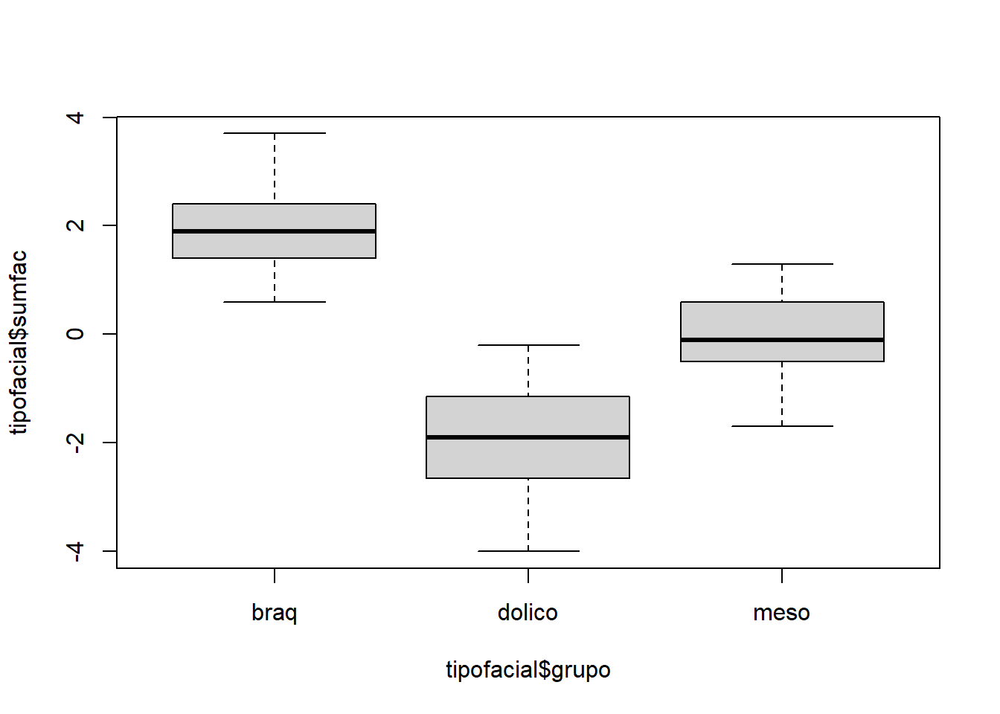
print(tipofacial, n = 32)## # A tibble: 101 × 14
## pacie…¹ sexo grupo idade nsba ns sba altfac proffac eixofac planm…² arcom…³
## <dbl> <chr> <fct> <dbl> <dbl> <dbl> <dbl> <dbl> <dbl> <dbl> <dbl> <dbl>
## 1 10 M braq 5.58 132 58 36 1.2 0.8 0.4 0.4 2.5
## 2 10 M braq 11.4 134 63 42.5 1.2 0.4 1 1 3.6
## 3 27 F braq 16.2 122. 77.5 48 2.6 0.2 0.3 0.9 3.4
## 4 39 F braq 4.92 130. 64 34.5 3.1 -1 1.9 1.3 1.6
## 5 39 F braq 10.9 130. 70 36.5 3.1 0.6 1.2 2.2 2.3
## 6 39 F braq 12.9 128 68.5 41.5 3.3 -0.6 1.1 1.2 2.1
## 7 55 F braq 16.8 130 71 42 2.4 0.3 1.1 1.2 3.5
## 8 76 F braq 16 125 72 46.5 1.9 0.5 1.4 0.6 3.5
## 9 77 F braq 17.1 130. 70 44 2.1 -0.1 2.2 0.8 0.7
## 10 133 M braq 14.8 130 80 52 2.8 0.2 0.4 1.1 1.8
## 11 145 F braq 10.7 118. 67 43.5 1.2 0.7 1.7 1.5 0.9
## 12 148 F braq 11.3 129 68 41.5 2.9 -0.7 2.2 1.3 2.2
## 13 165 F braq 15 137 74 43 2.1 -0.3 1.3 1.2 2.5
## 14 176 M braq 5.67 134 65 39 2.5 0.2 2.1 2.2 3.1
## 15 176 M braq 13 130 72 48 2.2 0.2 2.9 2.4 4
## 16 208 M braq 13.8 130 67.5 43 0.9 1.5 -0.4 1.2 2.3
## 17 246 F braq 11.8 129 67 43 0.8 1.1 1.5 0.3 1.4
## 18 27 F braq 4.67 126 63 35 1.9 0.2 0.3 0.1 1.6
## 19 39 F braq 3.67 131 61 32 3 -1.4 1.8 0.7 0.8
## 20 45 M braq 22.7 133 77 46 1.7 -0.9 -0.6 0.3 2.7
## 21 49 F braq 16.6 136. 71 42 1 0.5 0.1 0.2 2.7
## 22 52 M braq 12.6 126. 69 41.5 1.4 0 0.4 0.5 2.5
## 23 63 F braq 6.17 130. 63 37 1.9 -0.5 0.8 0.5 1.3
## 24 63 F braq 15.7 132 72.5 43 1.9 0 2 0.4 0.3
## 25 68 M braq 13.8 128 72 43 1.2 -0.6 1 1.1 2.3
## 26 76 F braq 5.33 124 61 39.5 1.3 -0.3 -0.1 0.6 1.6
## 27 86 F braq 5.25 126. 61.5 42.5 1.1 0 -0.1 0.2 2.7
## 28 109 M braq 14.9 131 78.5 50 1.8 -0.4 1.1 0.8 1.3
## 29 145 F braq 3.67 129 60 37.5 1 0 1.1 0.1 0.4
## 30 148 F braq 4.25 127 61.5 34 1.9 0.2 1.6 0 1.4
## 31 155 F braq 5.25 127 65 39.5 1.2 -0.5 1.2 0.2 1.4
## 32 155 F braq 11.3 128 71.5 45 2.3 -0.3 0.7 0.4 2.2
## # … with 69 more rows, 2 more variables: vert <dbl>, sumfac <dbl>, and abbreviated
## # variable names ¹paciente, ²planmand, ³arcomandsummary(tipofacial)## paciente sexo grupo idade nsba
## Min. : 10.0 Length:101 braq :33 Min. : 3.670 Min. :117.0
## 1st Qu.: 61.0 Class :character dolico:31 1st Qu.: 5.250 1st Qu.:125.0
## Median :105.0 Mode :character meso :37 Median :10.000 Median :128.0
## Mean :108.4 Mean : 9.204 Mean :127.7
## 3rd Qu.:148.0 3rd Qu.:12.580 3rd Qu.:130.0
## Max. :246.0 Max. :22.670 Max. :137.0
## ns sba altfac proffac
## Min. :57.00 Min. :32.0 Min. :-2.3000 Min. :-2.7000
## 1st Qu.:63.00 1st Qu.:38.5 1st Qu.:-0.3000 1st Qu.:-1.2000
## Median :66.50 Median :41.5 Median : 0.6000 Median :-0.7000
## Mean :67.03 Mean :41.5 Mean : 0.6238 Mean :-0.6119
## 3rd Qu.:71.00 3rd Qu.:44.0 3rd Qu.: 1.7000 3rd Qu.: 0.0000
## Max. :81.00 Max. :54.0 Max. : 3.3000 Max. : 1.5000
## eixofac planmand arcomand vert
## Min. :-3.5000 Min. :-2.9000 Min. :-2.3000 Min. :-1.92000
## 1st Qu.:-1.0000 1st Qu.:-1.3000 1st Qu.: 0.0000 1st Qu.:-0.68000
## Median :-0.2000 Median :-0.5000 Median : 0.8000 Median : 0.00000
## Mean :-0.1129 Mean :-0.4693 Mean : 0.8386 Mean : 0.04931
## 3rd Qu.: 0.8000 3rd Qu.: 0.4000 3rd Qu.: 1.6000 3rd Qu.: 0.80000
## Max. : 2.9000 Max. : 2.4000 Max. : 4.0000 Max. : 2.34000
## sumfac
## Min. :-4.00000
## 1st Qu.:-0.90000
## Median :-0.10000
## Mean : 0.01188
## 3rd Qu.: 1.40000
## Max. : 3.70000sd(tipofacial$sumfac)## [1] 1.750331Criando um dataframe para comparar as métricas dos modelos.
model_eval <- data.frame(matrix(ncol = 9, nrow = 0))
colnames(model_eval) <- c('Model', 'Algorithm', 'Accuracy', 'Sensitivity_C1', 'Sensitivity_C2', 'Sensitivity_C3', 'Specificity_C1', 'Specificity_C2', 'Specificity_C3')3.4.3 Generalized Linear Models
glm.fit = multinom(grupo ~ sumfac, data=tipofacial)## # weights: 9 (4 variable)
## initial value 110.959841
## iter 10 value 38.508219
## final value 38.456349
## convergedsummary(glm.fit)## Call:
## multinom(formula = grupo ~ sumfac, data = tipofacial)
##
## Coefficients:
## (Intercept) sumfac
## dolico 1.532730 -6.173138
## meso 3.781329 -3.762457
##
## Std. Errors:
## (Intercept) sumfac
## dolico 1.238970 1.174600
## meso 1.107069 1.005516
##
## Residual Deviance: 76.9127
## AIC: 84.9127predito = predict(glm.fit, newdata = tipofacial)
cm = confusionMatrix(predito, tipofacial$grupo)
cm## Confusion Matrix and Statistics
##
## Reference
## Prediction braq dolico meso
## braq 27 0 4
## dolico 0 23 2
## meso 6 8 31
##
## Overall Statistics
##
## Accuracy : 0.802
## 95% CI : (0.7109, 0.8746)
## No Information Rate : 0.3663
## P-Value [Acc > NIR] : < 2.2e-16
##
## Kappa : 0.7002
##
## Mcnemar's Test P-Value : NA
##
## Statistics by Class:
##
## Class: braq Class: dolico Class: meso
## Sensitivity 0.8182 0.7419 0.8378
## Specificity 0.9412 0.9714 0.7812
## Pos Pred Value 0.8710 0.9200 0.6889
## Neg Pred Value 0.9143 0.8947 0.8929
## Prevalence 0.3267 0.3069 0.3663
## Detection Rate 0.2673 0.2277 0.3069
## Detection Prevalence 0.3069 0.2475 0.4455
## Balanced Accuracy 0.8797 0.8567 0.8095# Adiciona as métricas no df
model_eval[nrow(model_eval) + 1,] <- c("glm.fit", "glm", cm$overall['Accuracy'], cm$byClass[,1], cm$byClass[,2])Seprando dados de treinamento (70%) e testes (30%).
alpha=0.7
d = sort(sample(nrow(tipofacial), nrow(tipofacial)*alpha))
train = tipofacial[d,]
test = tipofacial[-d,]
glm.fit = multinom(grupo ~ sumfac, data=train)## # weights: 9 (4 variable)
## initial value 76.902860
## iter 10 value 22.374781
## final value 22.241040
## convergedsummary(glm.fit)## Call:
## multinom(formula = grupo ~ sumfac, data = train)
##
## Coefficients:
## (Intercept) sumfac
## dolico 3.014243 -7.473771
## meso 5.434374 -4.808327
##
## Std. Errors:
## (Intercept) sumfac
## dolico 2.183394 1.929194
## meso 2.055686 1.743646
##
## Residual Deviance: 44.48208
## AIC: 52.48208predito = predict(glm.fit, newdata = test)
cm = confusionMatrix(predito, test$grupo)
cm## Confusion Matrix and Statistics
##
## Reference
## Prediction braq dolico meso
## braq 7 0 2
## dolico 0 6 1
## meso 5 2 8
##
## Overall Statistics
##
## Accuracy : 0.6774
## 95% CI : (0.4863, 0.8332)
## No Information Rate : 0.3871
## P-Value [Acc > NIR] : 0.001009
##
## Kappa : 0.5095
##
## Mcnemar's Test P-Value : NA
##
## Statistics by Class:
##
## Class: braq Class: dolico Class: meso
## Sensitivity 0.5833 0.7500 0.7273
## Specificity 0.8947 0.9565 0.6500
## Pos Pred Value 0.7778 0.8571 0.5333
## Neg Pred Value 0.7727 0.9167 0.8125
## Prevalence 0.3871 0.2581 0.3548
## Detection Rate 0.2258 0.1935 0.2581
## Detection Prevalence 0.2903 0.2258 0.4839
## Balanced Accuracy 0.7390 0.8533 0.6886# Adiciona as métricas no df
model_eval[nrow(model_eval) + 1,] <- c("glm.fit-split", "glm", cm$overall['Accuracy'], cm$byClass[,1], cm$byClass[,2])kable(model_eval) %>%
kable_styling(latex_options = "striped")| Model | Algorithm | Accuracy | Sensitivity_C1 | Sensitivity_C2 | Sensitivity_C3 | Specificity_C1 | Specificity_C2 | Specificity_C3 |
|---|---|---|---|---|---|---|---|---|
| glm.fit | glm | 0.801980198019802 | 0.818181818181818 | 0.741935483870968 | 0.837837837837838 | 0.941176470588235 | 0.971428571428571 | 0.78125 |
| glm.fit-split | glm | 0.67741935483871 | 0.583333333333333 | 0.75 | 0.727272727272727 | 0.894736842105263 | 0.956521739130435 | 0.65 |
Treinar o modelo com um conjunto de dados diferente do de teste mostrou que o modelo tem uma capcidade razoável de generalização.
3.4.4 Linear Discriminant Analysis - Fisher
modFisher01 = lda(grupo ~ sumfac, data = tipofacial)
predito = predict(modFisher01)
classPred = predito$class
cm = confusionMatrix(classPred, tipofacial$grupo)
cm## Confusion Matrix and Statistics
##
## Reference
## Prediction braq dolico meso
## braq 29 0 5
## dolico 0 23 2
## meso 4 8 30
##
## Overall Statistics
##
## Accuracy : 0.8119
## 95% CI : (0.7219, 0.8828)
## No Information Rate : 0.3663
## P-Value [Acc > NIR] : < 2.2e-16
##
## Kappa : 0.7157
##
## Mcnemar's Test P-Value : NA
##
## Statistics by Class:
##
## Class: braq Class: dolico Class: meso
## Sensitivity 0.8788 0.7419 0.8108
## Specificity 0.9265 0.9714 0.8125
## Pos Pred Value 0.8529 0.9200 0.7143
## Neg Pred Value 0.9403 0.8947 0.8814
## Prevalence 0.3267 0.3069 0.3663
## Detection Rate 0.2871 0.2277 0.2970
## Detection Prevalence 0.3366 0.2475 0.4158
## Balanced Accuracy 0.9026 0.8567 0.8117# Adiciona as métricas no df
model_eval[nrow(model_eval) + 1,] <- c("modFisher01", "lda", cm$overall['Accuracy'], cm$byClass[,1], cm$byClass[,2])3.4.5 Bayes
modBayes01 = lda(grupo ~ sumfac, data = tipofacial, prior = c(0.25, 0.50, 0.25))
predito = predict(modBayes01)
classPred = predito$class
cm = confusionMatrix(classPred, tipofacial$grupo)
cm## Confusion Matrix and Statistics
##
## Reference
## Prediction braq dolico meso
## braq 29 0 5
## dolico 0 24 6
## meso 4 7 26
##
## Overall Statistics
##
## Accuracy : 0.7822
## 95% CI : (0.689, 0.8582)
## No Information Rate : 0.3663
## P-Value [Acc > NIR] : < 2.2e-16
##
## Kappa : 0.6723
##
## Mcnemar's Test P-Value : NA
##
## Statistics by Class:
##
## Class: braq Class: dolico Class: meso
## Sensitivity 0.8788 0.7742 0.7027
## Specificity 0.9265 0.9143 0.8281
## Pos Pred Value 0.8529 0.8000 0.7027
## Neg Pred Value 0.9403 0.9014 0.8281
## Prevalence 0.3267 0.3069 0.3663
## Detection Rate 0.2871 0.2376 0.2574
## Detection Prevalence 0.3366 0.2970 0.3663
## Balanced Accuracy 0.9026 0.8442 0.7654# Adiciona as métricas no df
model_eval[nrow(model_eval) + 1,] <- c("modBayes01-prior 0.25 / 0.50 / 0.25", "lda", cm$overall['Accuracy'], cm$byClass[,1], cm$byClass[,2])Naive Bayes
modNaiveBayes01 = naiveBayes(grupo ~ sumfac, data = tipofacial)
predito = predict(modNaiveBayes01, tipofacial)
cm = confusionMatrix(predito, tipofacial$grupo)
cm## Confusion Matrix and Statistics
##
## Reference
## Prediction braq dolico meso
## braq 29 0 5
## dolico 0 23 2
## meso 4 8 30
##
## Overall Statistics
##
## Accuracy : 0.8119
## 95% CI : (0.7219, 0.8828)
## No Information Rate : 0.3663
## P-Value [Acc > NIR] : < 2.2e-16
##
## Kappa : 0.7157
##
## Mcnemar's Test P-Value : NA
##
## Statistics by Class:
##
## Class: braq Class: dolico Class: meso
## Sensitivity 0.8788 0.7419 0.8108
## Specificity 0.9265 0.9714 0.8125
## Pos Pred Value 0.8529 0.9200 0.7143
## Neg Pred Value 0.9403 0.8947 0.8814
## Prevalence 0.3267 0.3069 0.3663
## Detection Rate 0.2871 0.2277 0.2970
## Detection Prevalence 0.3366 0.2475 0.4158
## Balanced Accuracy 0.9026 0.8567 0.8117# Adiciona as métricas no df
model_eval[nrow(model_eval) + 1,] <- c("modNaiveBayes01", "naiveBayes", cm$overall['Accuracy'], cm$byClass[,1], cm$byClass[,2])3.4.6 Decison tree
modArvDec01 = rpart(grupo ~ sumfac, data = tipofacial)
prp(modArvDec01, faclen=0, #use full names for factor labels
extra=1, #display number of observations for each terminal node
roundint=F, #don't round to integers in output
digits=5)predito = predict(modArvDec01, type = "class")
cm = confusionMatrix(predito, tipofacial$grupo)
cm## Confusion Matrix and Statistics
##
## Reference
## Prediction braq dolico meso
## braq 26 0 0
## dolico 0 23 2
## meso 7 8 35
##
## Overall Statistics
##
## Accuracy : 0.8317
## 95% CI : (0.7442, 0.8988)
## No Information Rate : 0.3663
## P-Value [Acc > NIR] : < 2.2e-16
##
## Kappa : 0.7444
##
## Mcnemar's Test P-Value : NA
##
## Statistics by Class:
##
## Class: braq Class: dolico Class: meso
## Sensitivity 0.7879 0.7419 0.9459
## Specificity 1.0000 0.9714 0.7656
## Pos Pred Value 1.0000 0.9200 0.7000
## Neg Pred Value 0.9067 0.8947 0.9608
## Prevalence 0.3267 0.3069 0.3663
## Detection Rate 0.2574 0.2277 0.3465
## Detection Prevalence 0.2574 0.2475 0.4950
## Balanced Accuracy 0.8939 0.8567 0.8558# Adiciona as métricas no df
model_eval[nrow(model_eval) + 1,] <- c("modArvDec01", "rpart", cm$overall['Accuracy'], cm$byClass[,1], cm$byClass[,2])x = 1:nrow(tipofacial)
plot(tipofacial$sumfac ~ x, col = tipofacial$grupo)
3.4.7 SVM
modSVM01 = svm(grupo ~ sumfac, data = tipofacial, kernel = "linear")
predito = predict(modSVM01, type = "class")
cm = confusionMatrix(predito, tipofacial$grupo)
# Adiciona as métricas no df
model_eval[nrow(model_eval) + 1,] <- c("modSVM01", "svm", cm$overall['Accuracy'], cm$byClass[,1], cm$byClass[,2])3.4.8 neuralnet
modRedNeural01 = neuralnet(grupo ~ sumfac, data = tipofacial, hidden = c(2,4,3))
plot(modRedNeural01)
ypred = neuralnet::compute(modRedNeural01, tipofacial)
yhat = ypred$net.result
yhat = round(yhat)
yhat=data.frame("yhat"= dplyr::case_when(yhat[ ,1:1]==1 ~ "braq",
yhat[ ,2:2]==1 ~ "dolico",
TRUE ~ "meso"))
cm = confusionMatrix(tipofacial$grupo, as.factor(yhat$yhat))
cm## Confusion Matrix and Statistics
##
## Reference
## Prediction braq dolico meso
## braq 30 0 3
## dolico 0 23 8
## meso 3 2 32
##
## Overall Statistics
##
## Accuracy : 0.8416
## 95% CI : (0.7555, 0.9067)
## No Information Rate : 0.4257
## P-Value [Acc > NIR] : < 2.2e-16
##
## Kappa : 0.7605
##
## Mcnemar's Test P-Value : NA
##
## Statistics by Class:
##
## Class: braq Class: dolico Class: meso
## Sensitivity 0.9091 0.9200 0.7442
## Specificity 0.9559 0.8947 0.9138
## Pos Pred Value 0.9091 0.7419 0.8649
## Neg Pred Value 0.9559 0.9714 0.8281
## Prevalence 0.3267 0.2475 0.4257
## Detection Rate 0.2970 0.2277 0.3168
## Detection Prevalence 0.3267 0.3069 0.3663
## Balanced Accuracy 0.9325 0.9074 0.8290# Adiciona as métricas no df
model_eval[nrow(model_eval) + 1,] <- c("modRedNeural01", "neuralnet", cm$overall['Accuracy'], cm$byClass[,1], cm$byClass[,2])3.4.9 KNN
modKnn1_01 = knn3(grupo ~ sumfac, data = tipofacial, k = 1)
predito = predict(modKnn1_01, tipofacial, type = "class")
cm = confusionMatrix(predito, tipofacial$grupo)
cm## Confusion Matrix and Statistics
##
## Reference
## Prediction braq dolico meso
## braq 32 0 1
## dolico 0 30 3
## meso 1 1 33
##
## Overall Statistics
##
## Accuracy : 0.9406
## 95% CI : (0.8752, 0.9779)
## No Information Rate : 0.3663
## P-Value [Acc > NIR] : < 2.2e-16
##
## Kappa : 0.9108
##
## Mcnemar's Test P-Value : NA
##
## Statistics by Class:
##
## Class: braq Class: dolico Class: meso
## Sensitivity 0.9697 0.9677 0.8919
## Specificity 0.9853 0.9571 0.9688
## Pos Pred Value 0.9697 0.9091 0.9429
## Neg Pred Value 0.9853 0.9853 0.9394
## Prevalence 0.3267 0.3069 0.3663
## Detection Rate 0.3168 0.2970 0.3267
## Detection Prevalence 0.3267 0.3267 0.3465
## Balanced Accuracy 0.9775 0.9624 0.9303# Adiciona as métricas no df
model_eval[nrow(model_eval) + 1,] <- c("modKnn1_01-k=1", "knn3", cm$overall['Accuracy'], cm$byClass[,1], cm$byClass[,2])k = 3
modKnn3_01 = knn3(grupo ~ sumfac, data = tipofacial, k = 3)
predito = predict(modKnn3_01, tipofacial, type = "class")
cm = confusionMatrix(predito, tipofacial$grupo, positive = "0")
# Adiciona as métricas no df
model_eval[nrow(model_eval) + 1,] <- c("modKnn3_01-k=3", "knn3", cm$overall['Accuracy'], cm$byClass[,1], cm$byClass[,2])k = 5
modKnn5_01 = knn3(grupo ~ sumfac, data = tipofacial, k = 5)
predito = predict(modKnn5_01, tipofacial, type = "class")
cm = confusionMatrix(predito, tipofacial$grupo, positive = "0")
cm## Confusion Matrix and Statistics
##
## Reference
## Prediction braq dolico meso
## braq 28 0 1
## dolico 0 27 4
## meso 5 4 32
##
## Overall Statistics
##
## Accuracy : 0.8614
## 95% CI : (0.7784, 0.9221)
## No Information Rate : 0.3663
## P-Value [Acc > NIR] : < 2.2e-16
##
## Kappa : 0.791
##
## Mcnemar's Test P-Value : NA
##
## Statistics by Class:
##
## Class: braq Class: dolico Class: meso
## Sensitivity 0.8485 0.8710 0.8649
## Specificity 0.9853 0.9429 0.8594
## Pos Pred Value 0.9655 0.8710 0.7805
## Neg Pred Value 0.9306 0.9429 0.9167
## Prevalence 0.3267 0.3069 0.3663
## Detection Rate 0.2772 0.2673 0.3168
## Detection Prevalence 0.2871 0.3069 0.4059
## Balanced Accuracy 0.9169 0.9069 0.8621# Adiciona as métricas no df
model_eval[nrow(model_eval) + 1,] <- c("modKnn3_01-k=5", "knn3", cm$overall['Accuracy'], cm$byClass[,1], cm$byClass[,2])3.4.10 Avaliando os modelos
| Model | Algorithm | Accuracy | Sensitivity_C1 | Sensitivity_C2 | Sensitivity_C3 | Specificity_C1 | Specificity_C2 | Specificity_C3 |
|---|---|---|---|---|---|---|---|---|
| glm.fit | glm | 0.801980198019802 | 0.818181818181818 | 0.741935483870968 | 0.837837837837838 | 0.941176470588235 | 0.971428571428571 | 0.78125 |
| glm.fit-split | glm | 0.67741935483871 | 0.583333333333333 | 0.75 | 0.727272727272727 | 0.894736842105263 | 0.956521739130435 | 0.65 |
| modFisher01 | lda | 0.811881188118812 | 0.878787878787879 | 0.741935483870968 | 0.810810810810811 | 0.926470588235294 | 0.971428571428571 | 0.8125 |
| modBayes01-prior 0.25 / 0.50 / 0.25 | lda | 0.782178217821782 | 0.878787878787879 | 0.774193548387097 | 0.702702702702703 | 0.926470588235294 | 0.914285714285714 | 0.828125 |
| modNaiveBayes01 | naiveBayes | 0.811881188118812 | 0.878787878787879 | 0.741935483870968 | 0.810810810810811 | 0.926470588235294 | 0.971428571428571 | 0.8125 |
| modArvDec01 | rpart | 0.831683168316832 | 0.787878787878788 | 0.741935483870968 | 0.945945945945946 | 1 | 0.971428571428571 | 0.765625 |
| modSVM01 | svm | 0.801980198019802 | 0.818181818181818 | 0.741935483870968 | 0.837837837837838 | 0.941176470588235 | 0.971428571428571 | 0.78125 |
| modRedNeural01 | neuralnet | 0.841584158415842 | 0.909090909090909 | 0.92 | 0.744186046511628 | 0.955882352941177 | 0.894736842105263 | 0.913793103448276 |
| modKnn1_01-k=1 | knn3 | 0.940594059405941 | 0.96969696969697 | 0.967741935483871 | 0.891891891891892 | 0.985294117647059 | 0.957142857142857 | 0.96875 |
| modKnn3_01-k=3 | knn3 | 0.861386138613861 | 0.909090909090909 | 0.838709677419355 | 0.837837837837838 | 0.955882352941177 | 0.957142857142857 | 0.875 |
| modKnn3_01-k=5 | knn3 | 0.861386138613861 | 0.848484848484849 | 0.870967741935484 | 0.864864864864865 | 0.985294117647059 | 0.942857142857143 | 0.859375 |
Todos os modelos tiveram uma performace bem semelhante, sendo que knn, com \(k=3\), obteve o melhor resultado em todas as medidas.
3.4.11 Agrupamento
tipofacialS = subset(tipofacial, select=c("sexo", "idade", "altfac", "proffac"))
dummy <- dummyVars(" ~ .", data=tipofacialS)
newdata <- data.frame(predict(dummy, newdata = tipofacialS))
d <- dist(newdata, method = "maximum")
grup = hclust(d, method = "ward.D")
plot(grup, cex = 0.6)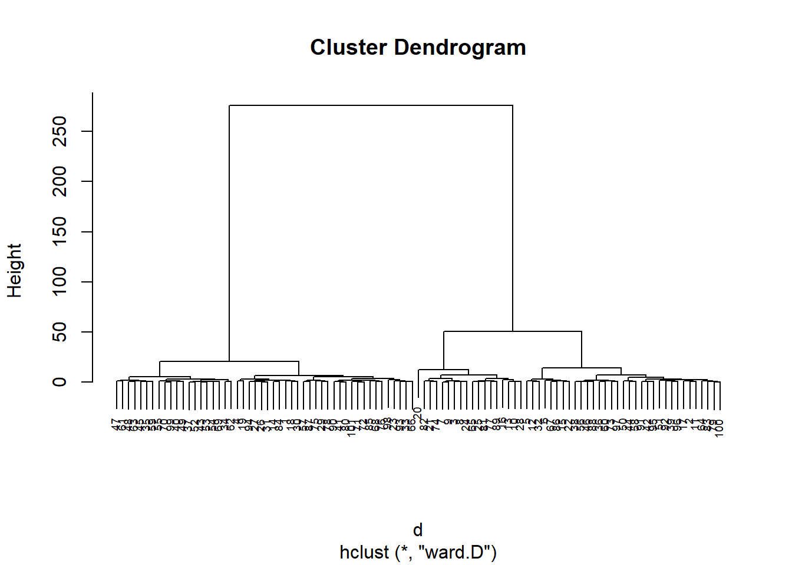
groups <- cutree(grup, k=3)
table(groups, tipofacial$grupo)##
## groups braq dolico meso
## 1 12 19 19
## 2 9 12 12
## 3 12 0 6km1 = kmeans(newdata, 4)
p1 = fviz_cluster(km1, data=newdata,
palette = c("#2E9FDF", "#FC4E07", "#E7B800", "#E7B700"),
star.plot=FALSE,
# repel=TRUE,
ggtheme=theme_bw())
p1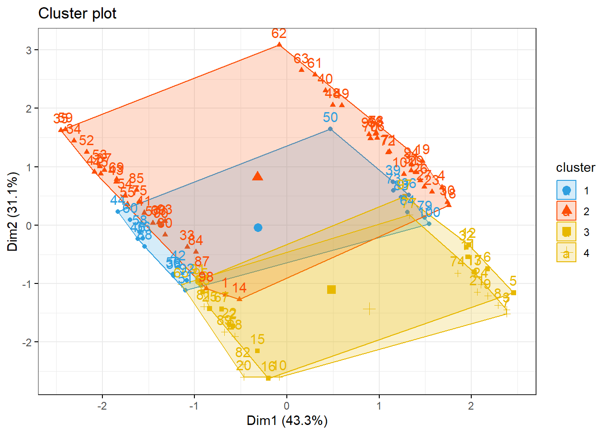
groups = km1$cluster
table(groups, tipofacial$grupo)##
## groups braq dolico meso
## 1 0 12 7
## 2 12 19 19
## 3 11 0 5
## 4 10 0 63.5 Análise do conjunto de dados USArrests
Análise de agrupamento para os dados USArrests.
3.5.1 Pacotes
Pacotes necessários para estes exercícios:
library(readxl)
library(tidyverse)
library(readxl)
library(ggthemes)
library(plotly)
library(knitr)
library(kableExtra)
library(factoextra)3.5.2 Conjunto de dados
USArrests é um conjunto de dados contendo estatísticas de prisões por 100.000 habitantes por agressão, assassinato e estupro em cada um dos 50 estados dos EUA em 1973. Também é fornecida a porcentagem da população que vive em áreas urbanas.
summary(USArrests)
require(graphics)
pairs(USArrests, panel = panel.smooth, main = "USArrests data")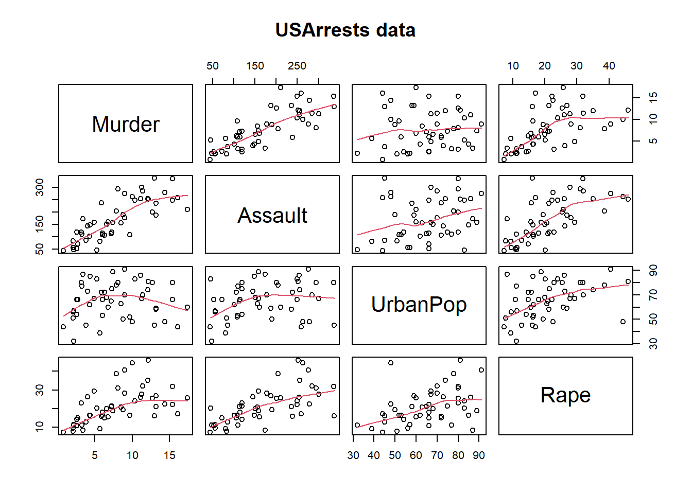
## Difference between 'USArrests' and its correction
USArrests["Maryland", "UrbanPop"] # 67 -- the transcription error
UA.C <- USArrests
UA.C["Maryland", "UrbanPop"] <- 76.6
## also +/- 0.5 to restore the original <n>.5 percentages
s5u <- c("Colorado", "Florida", "Mississippi", "Wyoming")
s5d <- c("Nebraska", "Pennsylvania")
UA.C[s5u, "UrbanPop"] <- UA.C[s5u, "UrbanPop"] + 0.5
UA.C[s5d, "UrbanPop"] <- UA.C[s5d, "UrbanPop"] - 0.53.5.3 Agrupamento
df <- scale(USArrests)
summary(df)## Murder Assault UrbanPop Rape
## Min. :-1.6044 Min. :-1.5090 Min. :-2.31714 Min. :-1.4874
## 1st Qu.:-0.8525 1st Qu.:-0.7411 1st Qu.:-0.76271 1st Qu.:-0.6574
## Median :-0.1235 Median :-0.1411 Median : 0.03178 Median :-0.1209
## Mean : 0.0000 Mean : 0.0000 Mean : 0.00000 Mean : 0.0000
## 3rd Qu.: 0.7949 3rd Qu.: 0.9388 3rd Qu.: 0.84354 3rd Qu.: 0.5277
## Max. : 2.2069 Max. : 1.9948 Max. : 1.75892 Max. : 2.6444d <- dist(df, method = "maximum")
grup = hclust(d, method = "ward.D")
plot(grup, cex = 0.6)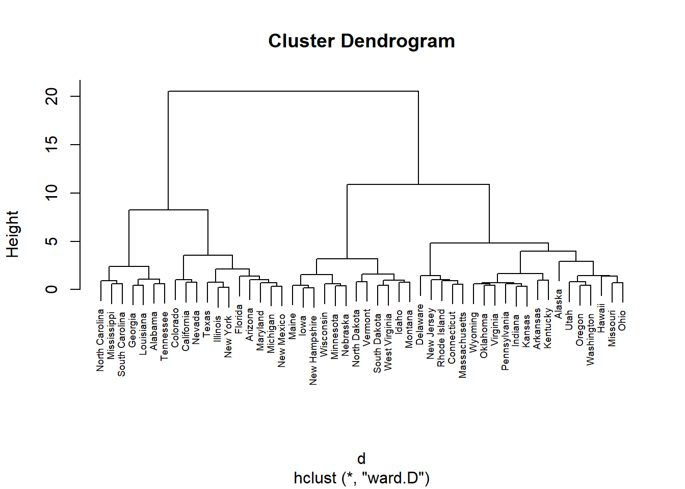
groups <- cutree(grup, k=3)
groups## Alabama Alaska Arizona Arkansas California
## 1 2 1 2 1
## Colorado Connecticut Delaware Florida Georgia
## 1 2 2 1 1
## Hawaii Idaho Illinois Indiana Iowa
## 2 3 1 2 3
## Kansas Kentucky Louisiana Maine Maryland
## 2 2 1 3 1
## Massachusetts Michigan Minnesota Mississippi Missouri
## 2 1 3 1 2
## Montana Nebraska Nevada New Hampshire New Jersey
## 3 3 1 3 2
## New Mexico New York North Carolina North Dakota Ohio
## 1 1 1 3 2
## Oklahoma Oregon Pennsylvania Rhode Island South Carolina
## 2 2 2 2 1
## South Dakota Tennessee Texas Utah Vermont
## 3 1 1 2 3
## Virginia Washington West Virginia Wisconsin Wyoming
## 2 2 3 3 2km1 = kmeans(df, 4, nstart = 25)
km1## K-means clustering with 4 clusters of sizes 8, 13, 13, 16
##
## Cluster means:
## Murder Assault UrbanPop Rape
## 1 1.4118898 0.8743346 -0.8145211 0.01927104
## 2 0.6950701 1.0394414 0.7226370 1.27693964
## 3 -0.9615407 -1.1066010 -0.9301069 -0.96676331
## 4 -0.4894375 -0.3826001 0.5758298 -0.26165379
##
## Clustering vector:
## Alabama Alaska Arizona Arkansas California
## 1 2 2 1 2
## Colorado Connecticut Delaware Florida Georgia
## 2 4 4 2 1
## Hawaii Idaho Illinois Indiana Iowa
## 4 3 2 4 3
## Kansas Kentucky Louisiana Maine Maryland
## 4 3 1 3 2
## Massachusetts Michigan Minnesota Mississippi Missouri
## 4 2 3 1 2
## Montana Nebraska Nevada New Hampshire New Jersey
## 3 3 2 3 4
## New Mexico New York North Carolina North Dakota Ohio
## 2 2 1 3 4
## Oklahoma Oregon Pennsylvania Rhode Island South Carolina
## 4 4 4 4 1
## South Dakota Tennessee Texas Utah Vermont
## 3 1 2 4 3
## Virginia Washington West Virginia Wisconsin Wyoming
## 4 4 3 3 4
##
## Within cluster sum of squares by cluster:
## [1] 8.316061 19.922437 11.952463 16.212213
## (between_SS / total_SS = 71.2 %)
##
## Available components:
##
## [1] "cluster" "centers" "totss" "withinss" "tot.withinss"
## [6] "betweenss" "size" "iter" "ifault"aggregate(df, by=list(cluster=km1$cluster), mean)## cluster Murder Assault UrbanPop Rape
## 1 1 1.4118898 0.8743346 -0.8145211 0.01927104
## 2 2 0.6950701 1.0394414 0.7226370 1.27693964
## 3 3 -0.9615407 -1.1066010 -0.9301069 -0.96676331
## 4 4 -0.4894375 -0.3826001 0.5758298 -0.26165379p1 = fviz_cluster(km1, data=df,
palette = c("#2E9FDF", "#FC4E07", "#E7B800", "#E7B700"),
star.plot=FALSE,
# repel=TRUE,
ggtheme=theme_bw(),
main = "Particionamento")
p1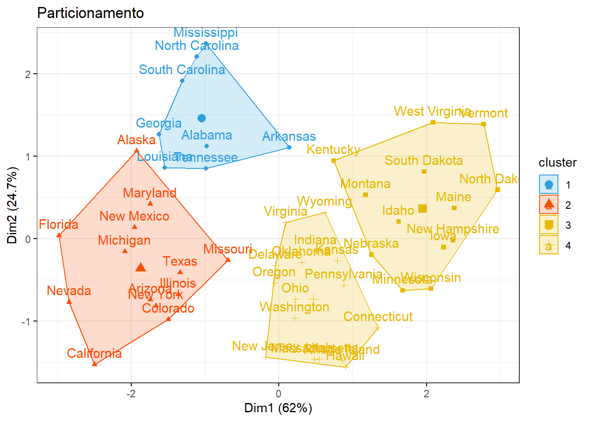